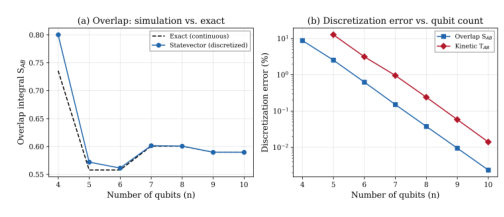

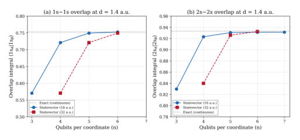
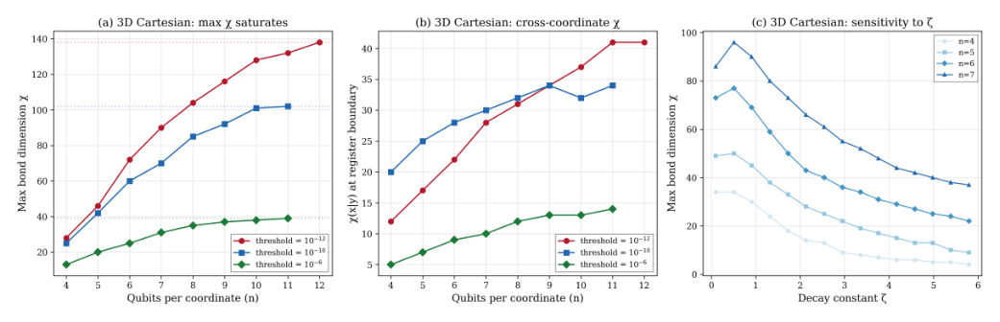
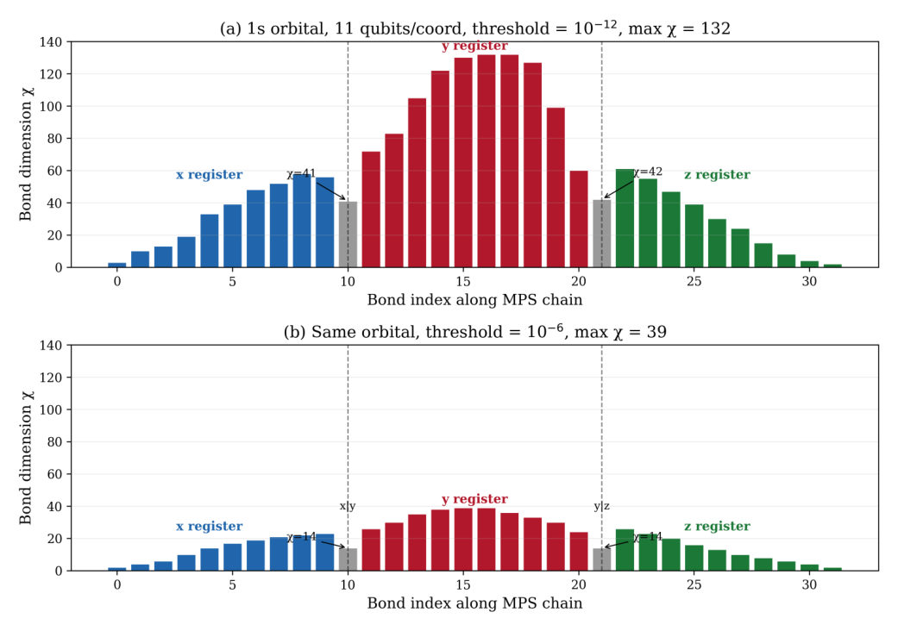
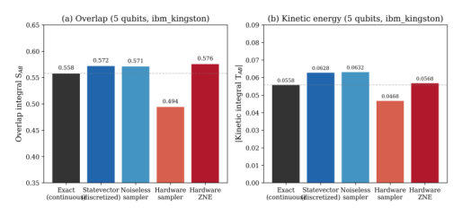
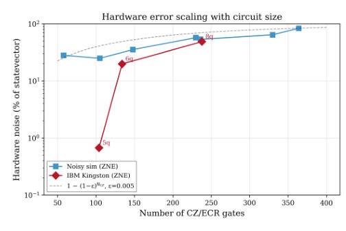
158 papers · 32 relevant · 2 highlighted
Every paper with at least one nonzero topic score, sorted by best-matching score. 🔥 marks scores ≥4/5. Click the title to jump to the full entry below; click [arXiv] to open the paper page. (secondary) marks papers from de-prioritized cond-mat archives.
Tavis-Cummings & cavity-many-emitter 5/5 · 🔥 Dicke superradiance 4/5 · 🔥 QC/QI experiment 4/5 · 🔥 correlated cavity matter 4/5 · 🔥 quantum optics experiment 4/5 · analog quantum simulation 3/5 · correlated / nonlocal dissipation 3/5 · spintronics-quantum-optics interface 3/5 · exotic spin models in light-matter 2/5 · non-equilibrium dynamics 2/5 · superradiant laser 2/5 · driven-dissipative phase transition 1/5 · entanglement & information structure 1/5 · quantum measurements 1/5QC/QI experiment 5/5 · 🔥 Rydberg arrays 5/5 · 🔥 entanglement & information structure 4/5 · non-equilibrium dynamics 3/5 · quantum optics experiment 2/5interference shaping light 5/5 · 🔥 quantum optics experiment 5/5 · 🔥 QC/QI experiment 4/5 · entanglement & information structure 2/5 · quantum measurements 2/5QC/QI experiment 5/5 · analog quantum simulation 3/5 · non-equilibrium dynamics 3/5 · quantum optics experiment 3/5 · entanglement & information structure 2/5Dicke superradiance 4/5 · 🔥 correlated / nonlocal dissipation 4/5 · 🔥 interference shaping light 4/5 · free-space correlated emission 3/5 · superradiant laser 3/5 · methods for driven-dissipative 2/5 · non-equilibrium dynamics 2/5QC/QI experiment 4/5 · 🔥 entanglement & information structure 4/5 · 🔥 quantum optics experiment 4/5 · non-equilibrium dynamics 3/5 · correlated / nonlocal dissipation 2/5 · quantum measurements 2/5QC/QI experiment 4/5 · 🔥 Rydberg arrays 4/5 · interference shaping light 3/5 · methods for driven-dissipative 2/5 · quantum optics experiment 2/5Keldysh / 2PI / non-Gaussian methods 4/5 · 🔥 entanglement & information structure 4/5 · non-equilibrium dynamics 3/5 · non-equilibrium universality 2/5 · scars & prethermalization 2/5entanglement & information structure 4/5 · 🔥 non-equilibrium dynamics 4/5 · Keldysh / 2PI / non-Gaussian methods 2/5 · non-equilibrium universality 2/5 · scars & prethermalization 2/5correlated / nonlocal dissipation 4/5 · entanglement & information structure 3/5 · Keldysh / 2PI / non-Gaussian methods 2/5 · methods for driven-dissipative 2/5 · non-equilibrium dynamics 2/5QC/QI experiment 4/5 · 🔥 quantum optics experiment 4/5 · interference shaping light 2/5 · quantum measurements 2/5entanglement & information structure 4/5 · non-equilibrium dynamics 3/5 · non-equilibrium universality 2/5 · scars & prethermalization 2/5quantum optics experiment 4/5 · quantum measurements 3/5 · Tavis-Cummings & cavity-many-emitter 2/5 · correlated / nonlocal dissipation 2/5QC/QI experiment 4/5 · correlated / nonlocal dissipation 2/5 · non-equilibrium dynamics 2/5 · quantum measurements 2/5quantum measurements 4/5 · methods for driven-dissipative 3/5 · non-equilibrium dynamics 3/5QC/QI experiment 4/5 · 🔥 quantum optics experiment 4/5non-equilibrium dynamics 4/5 · analog quantum simulation 2/5 · non-equilibrium universality 2/5QC/QI experiment 4/5 · exotic spin models in light-matter 2/5 · quantum measurements 2/5entanglement & information structure 4/5 · Keldysh / 2PI / non-Gaussian methods 2/5 · non-equilibrium dynamics 2/5Keldysh / 2PI / non-Gaussian methods 4/5 · methods for driven-dissipative 2/5 · non-equilibrium dynamics 2/5(secondary) — 🔥 non-equilibrium dynamics 4/5 · spintronics-quantum-optics interface 3/5entanglement & information structure 4/5 · non-equilibrium dynamics 3/5entanglement & information structure 4/5 · quantum measurements 2/5QC/QI experiment 4/5 · non-equilibrium dynamics 2/5Kondo & dissipative impurity 4/5 · Keldysh / 2PI / non-Gaussian methods 2/5quantum measurements 4/5 · entanglement & information structure 2/5methods for driven-dissipative 4/5 · non-equilibrium dynamics 2/5QC/QI experiment 4/5 · entanglement & information structure 1/5entanglement & information structure 4/5QC/QI experiment 4/5QC/QI experiment 4/5QC/QI experiment 4/5Papers by authors on your watch list. Click the title to jump to the full entry below; click [arXiv] to open the paper page.
Papers from quant-ph and your primary cond-mat archives (quant-gas, stat-mech, str-el, dis-nn). Highlighted papers (⭐) come first, then everything else sorted by topic-relevance score, highest first.
← Index · ← Previous · Next →
Authors: Partha Ghose
Type: theory · Category: quantum information and computing · PDF: https://arxiv.org/pdf/2604.26916v1
Analysis basis: full PDF text, analyzed in chunks
Topic relevance: entanglement & information structure 3/5 · quantum measurements 3/5
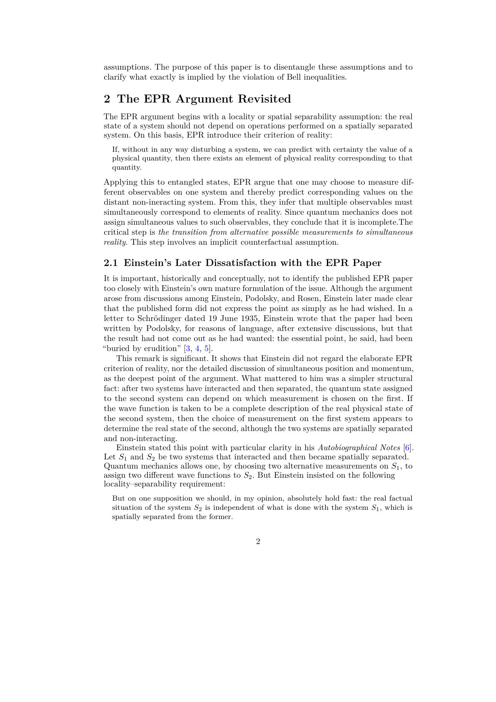
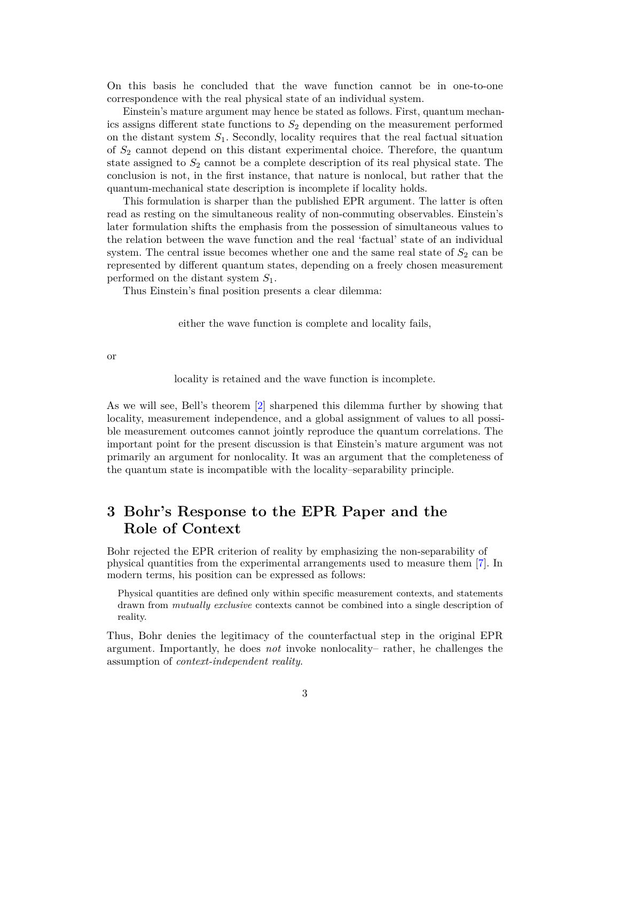
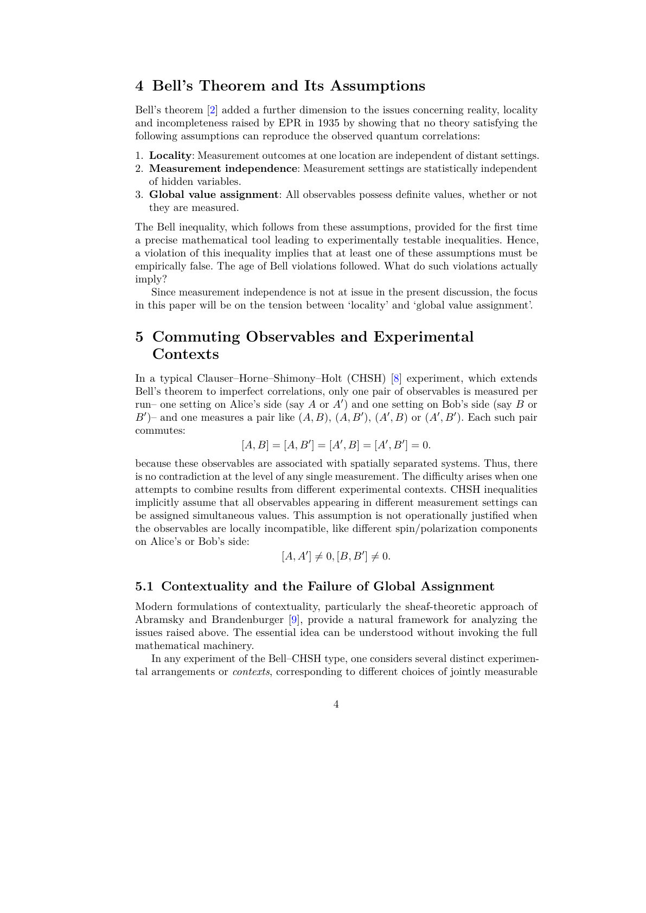
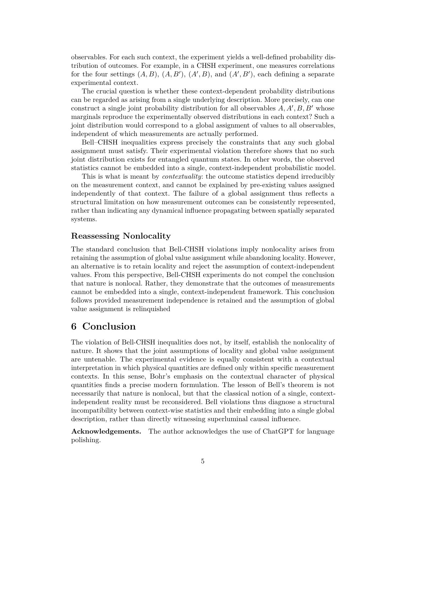
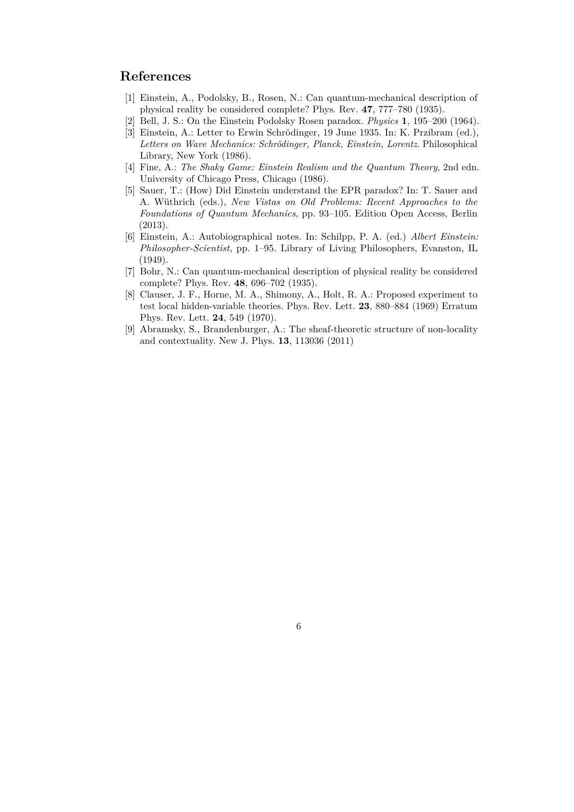
Main problem. The paper re-examines whether violations of Bell inequalities necessarily imply nonlocal causation or if they can be interpreted as evidence of contextuality.
Main result. The author demonstrates that Bell violations do not logically mandate nonlocality, but rather signal the failure of global value assignment (contextuality) across incompatible measurement contexts.
Method. The study employs a logical deconstruction of the EPR-Bell argument, a historical re-analysis of Einstein's formulations, and modern sheaf-theoretic approaches to model measurement contexts.
Summary. This paper challenges the standard conclusion that Bell inequality violations prove the nonlocality of nature. The author argues that these violations actually demonstrate contextuality—the impossibility of assigning definite values to all possible measurements simultaneously. By focusing on the role of counterfactual reasoning, the work suggests that locality can be preserved if one accepts that physical quantities are context-dependent. This interpretation aligns with modern mathematical approaches to quantum contextuality.
Model / system. The analysis focuses on entangled quantum systems and the framework of the EPR setup and CHSH-type experiments involving spatially separated, non-interacting systems.
Key observables. Non-commuting observables (A, A', B, B') and the existence of a joint probability distribution for all observables.
Assumptions / limitations. The paper challenges the assumption of global value assignment (counterfactual definiteness) and evaluates the tension between locality, measurement independence, and contextuality.
Paper structure. The paper begins with a re-evaluation of the EPR argument, moves into a logical deconstruction of the assumptions in Bell's theorem, applies sheaf-theoretic frameworks to define contextuality, and concludes by contrasting Einstein's and Bohr's interpretations.
Why it may be interesting. This is highly relevant for researchers in quantum information and foundations, as it provides a structural, sheaf-theoretic alternative to the standard interpretation of nonlocality, potentially reframing how we understand entanglement and contextuality.
The widespread claim that violations of Bell inequalities establish the nonlocality of nature is critically reexamined. It is argued that this conclusion is not logically compelled by either the Einstein--Podolsky--Rosen (EPR) argument or Bell's theorem. The analysis highlights the central role of counterfactual reasoning -- the assumption that outcomes of unperformed measurements possess definite values -- in deriving Bell inequalities. It is shown that these inequalities follow not from locality alone, but from the conjunction of locality with a global assignment of values across incompatible measurement contexts. Their experimental violation therefore signals the impossibility of such a global assignment, i.e.\ contextuality, rather than necessarily implying nonlocal causation. This interpretation aligns with Bohr's emphasis on the contextual character of physical quantities and is naturally formulated within modern sheaf-theoretic approaches to contextuality.
Authors: Sorin Bolos
Type: both · Category: quantum information and computing · PDF: https://arxiv.org/pdf/2604.26314v1
Analysis basis: full PDF text, analyzed in chunks
Topic relevance: QC/QI experiment 3/5 · entanglement & information structure 2/5






Main problem. The challenge of efficiently encoding and preparing physically accurate Slater-Type Orbitals (STOs) on quantum hardware to enable exact evaluation of quantum chemistry integrals without the exponential cost of generic state preparation.
Main result. The study establishes that 3D Cartesian amplitude encoding of STOs has bounded complexity rather than exponential scaling, with the MPS bond dimension saturating at approximately 138. It also demonstrates successful 1D integral pipeline validation on IBM Heron processors.
Method. The authors use Matrix Product States (MPS) for amplitude encoding and derive analytical constructions for 1D orbitals. They employ SVD truncation to manage bond dimension and use Zero-Noise Extrapolation (ZNE) for hardware error mitigation.
Summary. This paper presents a method for encoding Slater-Type Orbitals (STOs) on quantum computers using Matrix Product States (MPS). By using amplitude encoding, the authors show that the complexity of representing 3D orbitals does not grow exponentially but instead reaches a bounded bond dimension. They successfully demonstrate a 1D integral evaluation pipeline on IBM Heron hardware and prove that SVD truncation can significantly reduce circuit complexity without losing accuracy. This establishes a viable path for performing exact quantum chemistry calculations on near-term and fault-tolerant quantum hardware.
Model / system. The study focuses on hydrogen-like 1s and 2s orbitals in 1D, 3D spherical, and 3D Cartesian coordinate systems, validated on IBM Heron-generation quantum processors.
Key observables. Overlap integrals, kinetic energy integrals, and nuclear attraction integrals.
Important parameters / regimes. MPS bond dimension (chi), SVD truncation threshold, qubit count (n), and decay constant (zeta).
Assumptions / limitations. The efficiency of Cartesian encoding may depend on orbital localization; current hardware noise levels currently limit the feasibility of large-scale 3D Cartesian and nuclear attraction circuits.
Figures summary. Figure 1 shows discretization convergence for 1D integrals; Figure 2 shows 3D overlap convergence; Figure 3 plots bond dimension saturation and sensitivity to decay constants; Figure 4 illustrates the bond dimension profile across the MPS chain; Figure 5 and 6 show hardware validation and error scaling on IBM processors.
Paper structure. The paper introduces the Gaussian vs. Slater trade-off, presents analytical 1D MPS constructions, extends the framework to 3D Cartesian and spherical coordinates, analyzes entanglement scaling and bond dimension saturation, validates results on IBM hardware, and discusses limitations regarding two-electron integrals and hardware noise.
Why it may be interesting. This work is highly relevant as it provides a scalable, tensor-network-based framework for mapping continuous molecular wavefunctions onto qubits, potentially enabling high-precision quantum chemistry simulations that bypass the systematic errors of Gaussian approximations.
Slater-type orbitals (STOs) provide the physically correct description of atomic wavefunctions but have been largely replaced by Gaussian-type orbitals in computational chemistry due to the lack of closed-form multi-center integrals. We present a systematic study of amplitude encoding of STOs on quantum computers using matrix product states (MPS). For one-dimensional orbital functions of the form $p_d(x) e^{-ζx}$, we derive analytical MPS constructions with constant bond dimension $χ= d + 1$, requiring $O(n)$ classical and quantum resources for $n$-qubit registers with no grid sampling. We demonstrate a complete one-electron integral pipeline -- overlap, kinetic energy, and nuclear attraction -- in one dimension, validating the overlap and kinetic energy on IBM Heron processors at 5~qubits with 0.67\% hardware-induced error using Zero-Noise Extrapolation. In three dimensions, we compute multi-center overlap integrals between 1s and 2s orbitals in Cartesian coordinates with 0.02\% discretization error at 18~qubits. A systematic entanglement analysis reveals that the MPS bond dimension of three-dimensional STOs in Cartesian coordinates saturates with increasing grid resolution -- reaching $\sim$138 for the hydrogen 1s orbital at 12~qubits per coordinate -- establishing bounded encoding complexity rather than the exponential scaling initially expected. The SVD truncation threshold provides a practical resource parameter, reducing the bond dimension to 39 at threshold $10^{-6}$ with negligible accuracy loss. These results map the entanglement landscape for amplitude encoding of atomic orbitals and establish MPS-based state preparation as a viable path toward exact STO basis sets on quantum computers.
Authors: Alireza Goldar, Zhen Qin, Zhihui Zhu, Zhe-Xuan Gong, Michael B. Wakin
Type: theory · Category: quantum information and computing · PDF: https://arxiv.org/pdf/2604.26043v1
Analysis basis: full PDF text, analyzed in chunks
Topic relevance: quantum measurements 3/5 · entanglement & information structure 2/5

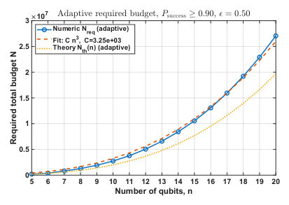
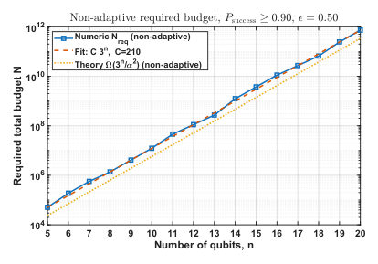
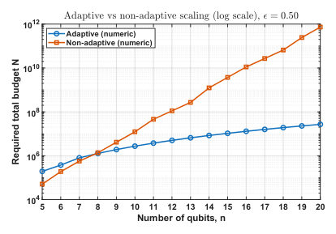
Main problem. Determining whether adaptive measurement selection provides a fundamental advantage in sample complexity for quantum state tomography of structured states.
Main result. The paper proves an exponential separation in sample complexity, showing that an adaptive protocol achieves polynomial copy complexity while any non-adaptive design requires exponentially many copies for a specific family of structured states.
Method. The authors use a constructive stagewise prefix recovery algorithm for the adaptive upper bound and a rare-prefix mechanism based on KL divergence analysis for the non-adaptive lower bound.
Summary. This paper demonstrates that for certain structured quantum states, choosing measurements adaptively can reduce the number of required quantum copies from exponential to polynomial. By focusing on a hierarchical 'prefix/tree' family of states under local Pauli measurements, the authors prove a rigorous exponential advantage in sample complexity. This result highlights how sequential measurement strategies can significantly optimize state reconstruction on near-term quantum hardware.
Model / system. A multi-qubit system of n qubits using a structured 'prefix/tree' family of density matrices, where information is distributed hierarchically across Pauli basis strings, measured via single-copy local Pauli basis measurements.
Key observables. Trace distance between the estimated and true state, and the expectation values of prefix Pauli operators.
Important parameters / regimes. Number of qubits (n), error tolerance (epsilon), success probability (eta), and signal coefficients (alpha and beta).
Assumptions / limitations. The results are specific to the defined local Pauli measurement architecture and the constructed prefix/tree family of states.
Figures summary. Figure 1 shows the adaptive budget growing with a cubic fit (n^3); Figure 2 shows the non-adaptive budget growing exponentially; Figure 3 provides a log-scale comparison illustrating the scaling gap.
Paper structure. The paper introduces the problem of adaptive vs non-adaptive tomography, defines the structured prefix/tree state family and measurement model, provides a constructive adaptive upper bound, establishes a non-adaptive lower bound using KL divergence, and concludes with numerical verification of the scaling gap.
Broad claims about whether adaptivity helps in quantum state tomography can be misleading unless the state family, measurement architecture, and error metric are specified carefully. We study a restricted but physically important regime: single-copy quantum state tomography under local Pauli basis measurements, where the allowed measurement settings are tensor-product measurement operators built from local single-qubit Pauli operators, and performance is measured in trace distance with high probability in a minimax sense over a known structured family. We construct an explicit discrete prefix/tree family of states for which adaptive measurement selection achieves polynomial copy complexity, while every non-adaptive design requires exponentially many copies in the worst case. The adaptive upper bound comes from stagewise prefix recovery using hierarchical breadcrumb information revealed by partial prefix matches. The non-adaptive lower bound is based on a rare-prefix mechanism: every fixed design under-samples some deep prefix subset, and outside that subset the competing hypotheses induce identical one-shot laws, so only an exponentially small fraction of the measurement budget contributes to the KL divergence between the full data distributions. The result isolates a concrete regime in which adaptivity provably changes the sample-complexity scaling under the experimentally common local Pauli measurement architecture.
Authors: Diana Méndez-Avalos, Théo Louzada Meireles, Morgan W. Mitchell, Aleksandra Sierant
Type: experiment · Category: other · PDF: https://arxiv.org/pdf/2604.26721v1
Analysis basis: full PDF text, analyzed in chunks
Topic relevance: quantum optics experiment 3/5 · quantum measurements 2/5
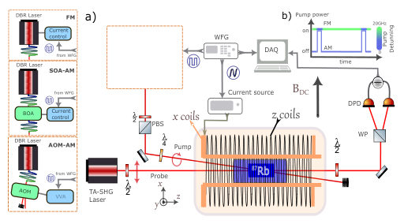
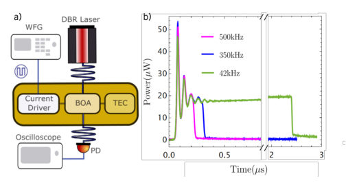
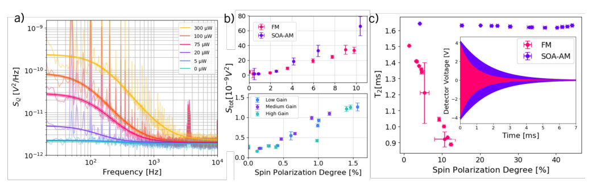
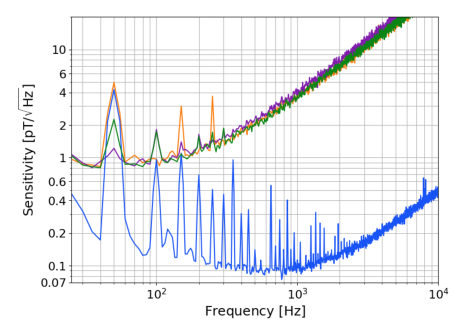
Main problem. Evaluating the noise properties and performance of different pulsed optical pumping strategies, specifically comparing semiconductor optical amplifier (SOA) amplitude modulation against traditional FM and AOM-AM methods for atomic magnetometry.
Main result. The SOA-AM method introduces negligible additional noise and achieves significantly higher magnetic sensitivity (up to 80 fT/sqrt(Hz)) and longer unpumped coherence times compared to FM and AOM-AM methods.
Method. The researchers compared three modulation techniques (FM, AOM-AM, and SOA-AM) in a Bell-Bloom and FID-mode $^{87}$Rb magnetometer, measuring Faraday rotation, spin polarization, and magnetic sensitivity.
Summary. This paper investigates using a semiconductor optical amplifier (SOA) to perform high-power, low-noise pulsed optical pumping in an $^{87}$Rb atomic vapor magnetometer. By comparing SOA-based amplitude modulation to traditional frequency and amplitude modulation, the authors show that the SOA introduces negligible extra noise while providing much higher power. This approach enables magnetic sensitivities up to two orders of magnitude better than previous methods and preserves spin coherence more effectively. The results suggest SOA-AM is a powerful tool for next-generation high-sensitivity atomic sensors.
Model / system. An experimental platform consisting of an $^{87}$Rb atomic vapor in a 3 cm glass cell with 100 torr N2 buffer gas, operated in Earth-field conditions using a Bell-Bloom and Free-Induction-Decay (FID) magnetometer setup.
Key observables. Faraday rotation angle, spin polarization (Pz), coherence time (T2), and magnetic-field sensitivity (fT/sqrt(Hz)).
Important parameters / regimes. Larmor frequencies of ~500 kHz, duty cycles of 10%, and sensitivities reaching 80 fT/sqrt(Hz) at 600 Hz.
Assumptions / limitations. The sensitivity at higher pump powers is limited by environmental noise rather than the SOA itself.
Figures summary. Fig 1a shows the Bell-Bloom OPM setup; Fig 3a shows the PSD of polarization noise under SOA-AM; Fig 3b compares total spin noise between FM and SOA-AM.
Paper structure. The paper introduces the problem of pulsed optical pumping, describes the experimental setup and three modulation methods, presents a comparative noise and coherence analysis, and concludes with the demonstrated sensitivity improvements.
Why it may be interesting. This work is highly relevant for quantum optics and AMO physicists as it demonstrates a way to achieve high-power, low-noise control of atomic spin states, which is critical for developing high-bandwidth quantum sensors and interfaces.
We use a $^{87}\text{Rb}$ atomic vapor, suitable for an optically-pumped magnetometer (OPM) in Earth-field conditions, to study the noise properties of three strategies for generating pulsed optical pumping. We compare a frequency-modulated (FM) laser, amplitude modulation (AM) via an acousto-optic modulator (AOM), and amplitude modulation via a semiconductor optical amplifier (SOA). Pumping the ensemble to operate as a Bell-Bloom OPM, and with an equal degree of spin polarization, the three methods give nearly identical sensitivity, showing that the SOA, despite being an active device, can introduce negligible additional noise. Pumping the ensemble to operate as a free-induction-decay OPM, we observe longer unpumped coherence times with the SOA-AM method than with the FM method. Finally, using the higher power available from the SOA, we demonstrate an environment-limited sensitivity of $80\text{fT}/\sqrt{\text{Hz}}$ at $600\text{Hz}$ and 200fT$200\text{fT}/\sqrt{\text{Hz}}$ at $4\text{kHz}$, one to two orders of magnitude beyond what was achievable with the other pumping methods.
Authors: Abhay K. Ram, Efstratios Koukoutsis, George Vahala, Kyriakos Hizanidis
Type: theory · Category: quantum information and computing · PDF: https://arxiv.org/pdf/2604.26099v1
Analysis basis: full PDF text, analyzed in chunks
Topic relevance: analog quantum simulation 3/5 · entanglement & information structure 2/5
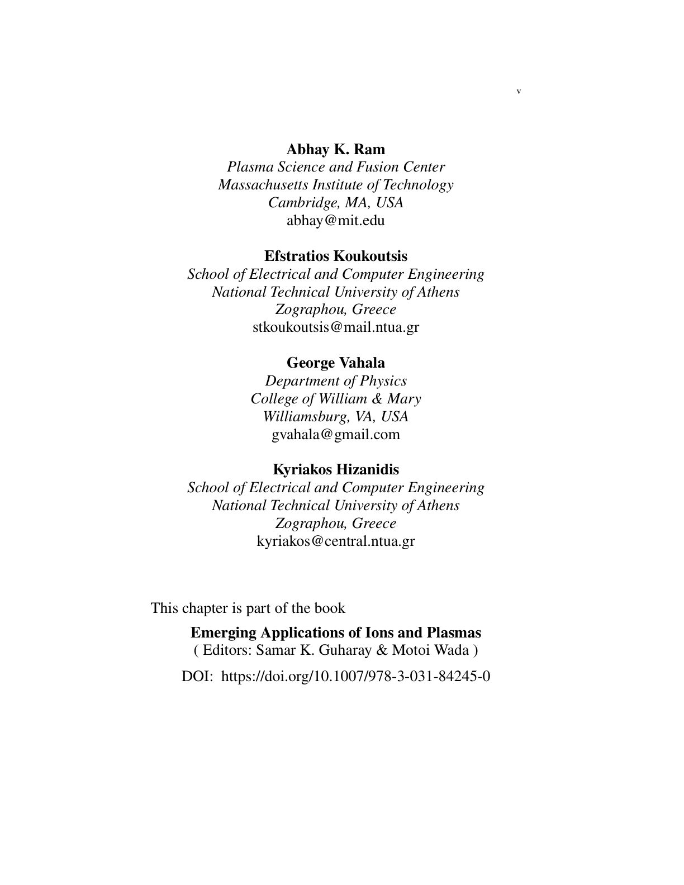
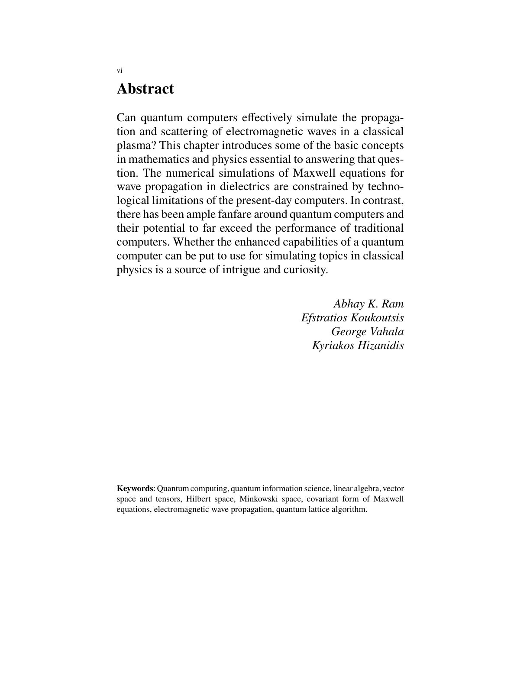
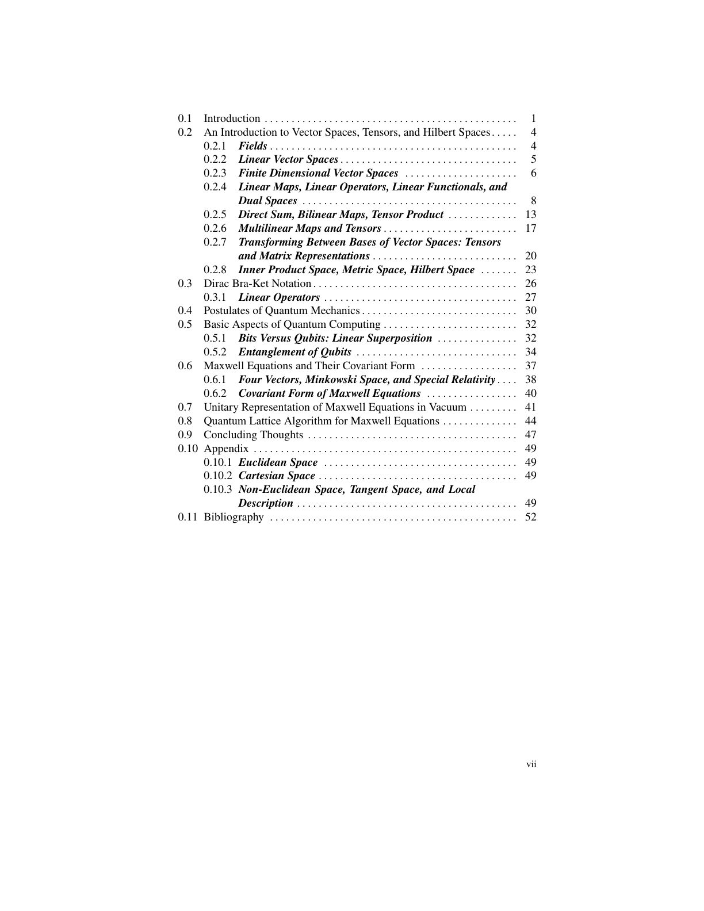
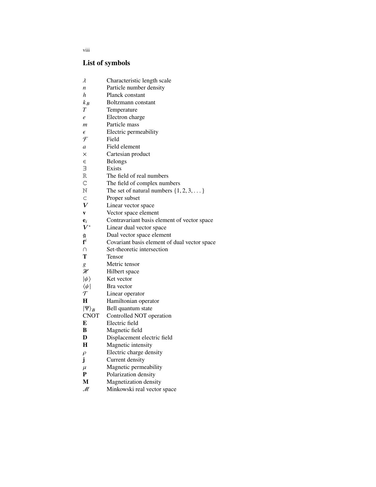

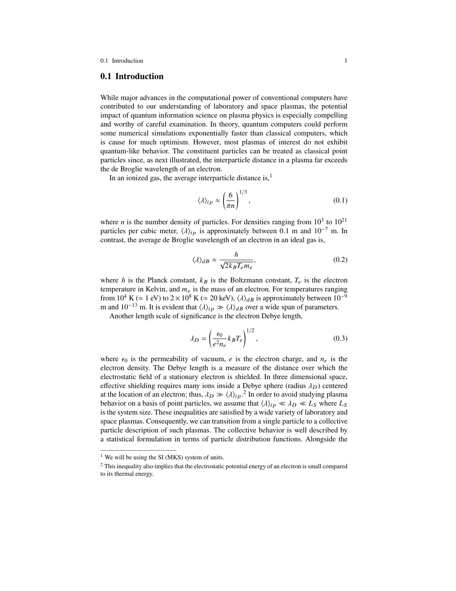
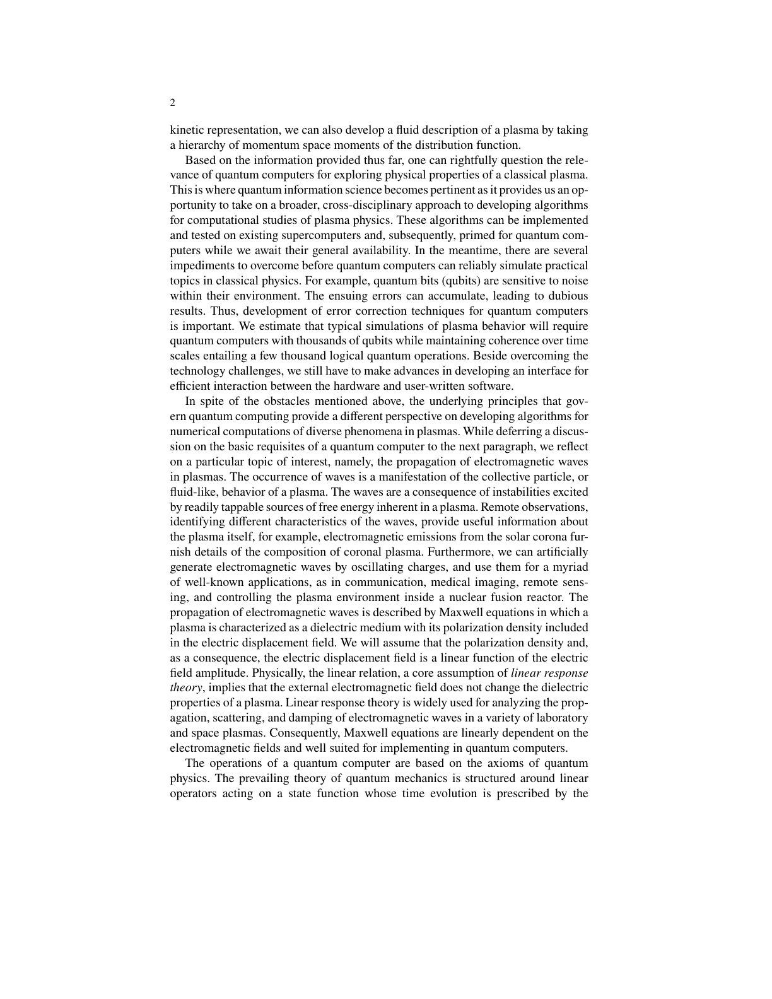
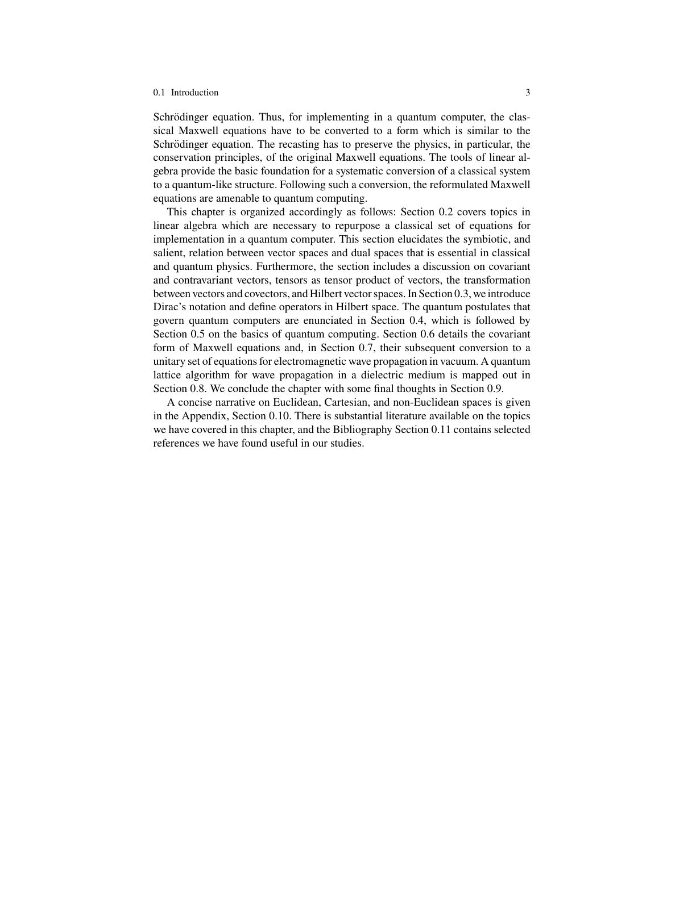
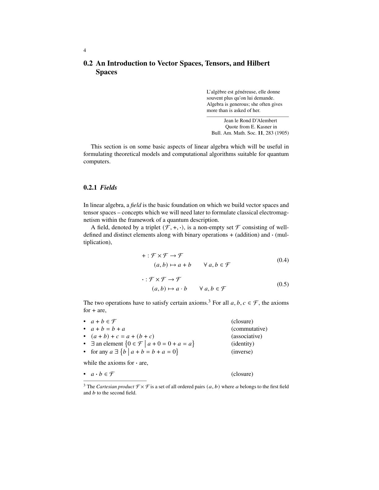
Main problem. Developing a mathematical framework to recast classical Maxwell equations into a unitary, Schrödinger-like form suitable for implementation via Quantum Lattice Algorithms (QLA).
Main result. The authors demonstrate that by using Riemann-Silberstein-Weber (RSW) vectors, Maxwell's equations can be transformed into a linear, unitary evolution equation that approaches the continuous classical limit with second-order accuracy.
Method. The paper utilizes tensor calculus, linear algebra, and the construction of a Quantum Lattice Algorithm (QLA) involving streaming and entanglement operators on a discrete lattice.
Summary. This paper establishes the mathematical foundation for using quantum computers to simulate classical electromagnetic wave propagation. By reformulating Maxwell's equations into a unitary, Schrödinger-like structure using Riemann-Silberstein-Weber vectors, the authors propose a Quantum Lattice Algorithm (QLA). This approach allows for the simulation of waves in dielectric media and plasmas, potentially overcoming the computational bottlenecks of classical numerical methods. The work highlights how the linear nature of classical electromagnetism can be mapped onto the logic of qubits and quantum gates.
Model / system. The system involves electromagnetic wave propagation in vacuum, dielectric media, and magnetized plasmas, modeled using the covariant form of Maxwell's equations and the Minkowski metric.
Key observables. Electric and magnetic field vectors (E, B), electric displacement (D), magnetic intensity (H), and the electromagnetic field tensor (F_mu_nu).
Important parameters / regimes. Plasma frequencies (electron/ion), cyclotron frequencies, Debye length, and the continuum limit where lattice spacing approaches zero.
Assumptions / limitations. The plasma is treated as a linear dielectric medium (linear response theory), and the current formulation assumes no external charge or current sources.
Paper structure. The paper progresses from fundamental linear algebra and tensor calculus to the application of Dirac notation and quantum postulates, eventually deriving the unitary representation of Maxwell's equations and the specific steps of the Quantum Lattice Algorithm.
Why it may be interesting. This work is highly relevant for researchers in quantum optics and open quantum systems as it provides a rigorous mathematical bridge for using quantum hardware to simulate classical wave phenomena and complex plasma-wave interactions.
Can quantum computers effectively simulate the propagation and scattering of electromagnetic waves in a classical plasma? This chapter introduces some of the basic concepts in mathematics and physics essential to answering that question. The numerical simulations of Maxwell equations for wave propagation in dielectrics are constrained by technological limitations of the present-day computers. In contrast, there has been ample fanfare around quantum computers and their potential to far exceed the performance of traditional computers. Whether the enhanced capabilities of a quantum computer can be put to use for simulating topics in classical physics is a source of intrigue and curiosity.
Authors: Dimitrios Diplaris, Ilias A. Englezos, Friethjof Theel, Peter Schmelcher, Simeon I. Mistakidis
Type: theory · Category: quantum gases · PDF: https://arxiv.org/pdf/2604.26528v1
Analysis basis: full PDF text, analyzed in chunks
Topic relevance: non-equilibrium dynamics 3/5 · Kondo & dissipative impurity 2/5
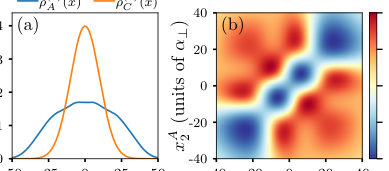
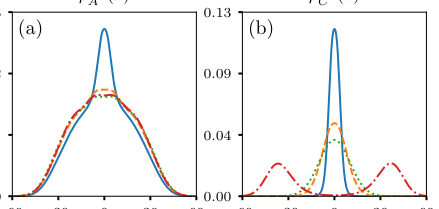
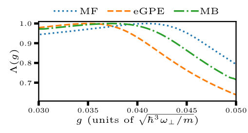
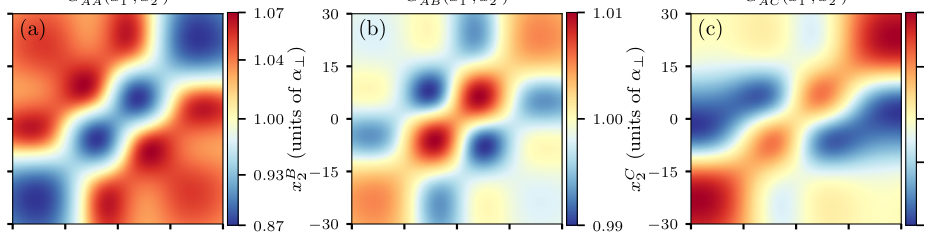
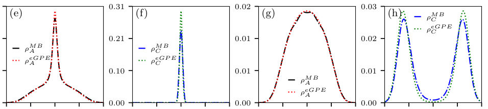
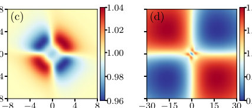
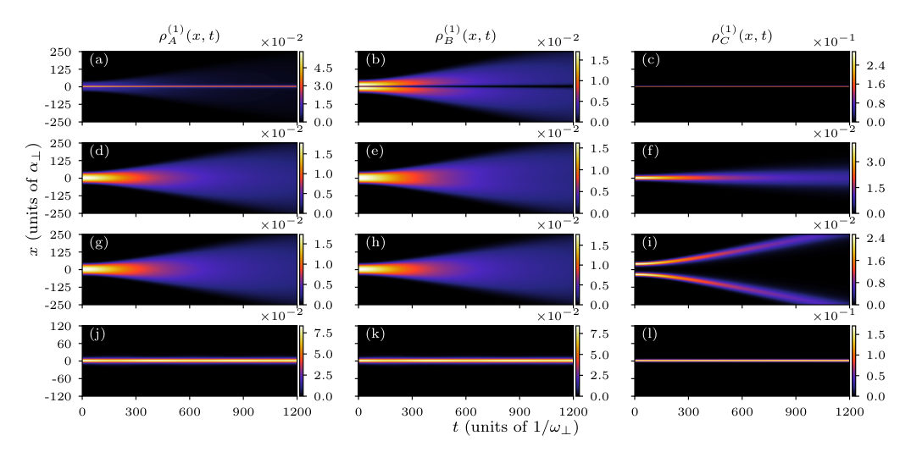
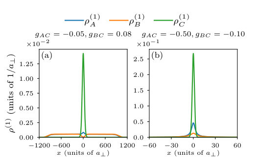
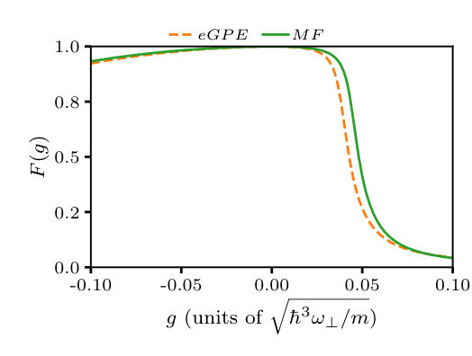
Main problem. The study investigates how a single impurity affects the ground-state properties, phase separation, and expansion dynamics of a one-dimensional two-component quantum droplet.
Main result. The impurity can selectively deform the droplet density profiles, causing density humps for attractive interactions and phase separation for repulsive interactions; furthermore, strong attractive interactions can stabilize the system against expansion following trap release.
Method. The authors use the ab-initio Multi-layer Multi-Configuration Time-Dependent Hartree method for Bosons (ML-MCTDHB) and compare it with the extended Gross-Pitaevskii equation (eGPE) and mean-field approximations.
Summary. This paper explores the physics of a single bosonic impurity embedded in a 1D quantum droplet. By tuning the interaction between the impurity and the droplet components, the researchers show that one can control density deformations, induce phase separation, or even stabilize the droplet against expansion. The study highlights the importance of many-body correlations beyond the standard Gross-Pitaevskii description. These findings suggest that impurities could serve as powerful tools for probing the internal structure of quantum droplets.
Model / system. A 1D three-component bosonic mixture consisting of a two-component quantum droplet (species A and B) and a single impurity (species C) in a harmonic trap.
Key observables. One-body density profiles, two-body coherence functions (G2), impurity localization, density overlap parameter, and fidelity/impurity dressing.
Important parameters / regimes. Impurity-droplet coupling strengths (gAC, gBC), interaction signs (attractive vs. repulsive), and the LHY fluid regime.
Assumptions / limitations. The system is treated in the 1D regime via strong transverse confinement; the eGPE approach assumes the validity of the Lee-Huang-Yang correction within the local density approximation.
Figures summary. Figure 1 shows ground-state densities for non-interacting cases; Figure 2 demonstrates density humps and dips across different coupling strengths; Figure 3 compares density overlap using different models; Figure 4 shows G2 correlation patterns; Figure 7 illustrates expansion dynamics following trap release; Figure 8 shows density profiles in a box potential.
Paper structure. The paper introduces the physical system, details the many-body and effective field methods, analyzes ground-state density deformations and correlation patterns, explores phase separation regimes, investigates expansion dynamics after trap release, and concludes with implications for impurity-based probing of droplets.
Why it may be interesting. It provides deep insights into how impurities can be used as local probes to manipulate and sense the structure of self-bound quantum droplets, bridging impurity physics with the study of quantum fluids.
We explore the ground-state properties of a single impurity immersed in a one-dimensional quantum droplet medium formed by a two-component Bose mixture. Relying on ab-initio simulations, we demonstrate that tuning the impurity-droplet interactions allows to controllably reshape the droplets density profiles and associated correlation patterns. For attractive impurity-medium couplings, the impurity becomes localized within the droplet which exhibits a density hump at the vicinity of the impurity, while repulsive interactions facilitate their phase-separation. Comparing our many-body results to the appropriate extended Gross-Pitaevskii description, we find adequate agreement for the droplet density profiles, with the effective field approach systematically overestimating impurity localization. Following a release of the external trap, we unveil that the sign and magnitude of the interactions between the impurity and the droplet hosts dictate the response of the three-component setting which experiences expansion unless strongly attractive intercomponent couplings are present. These results corroborate the role and presence of correlations in impurity-droplet mixtures and inspire future investigations on impurity physics for probing droplet configurations.
Authors: Maria Kvashchuk, Polina Chernyshova, Lucas E. A. Porto, Ties-A. Ohst, Lucas B. Vieira, Marco Túlio Quintino
Type: theory · Category: quantum information and computing · PDF: https://arxiv.org/pdf/2604.26927v1
Analysis basis: full PDF text, analyzed in chunks
Topic relevance: quantum measurements 3/5 · entanglement & information structure 2/5
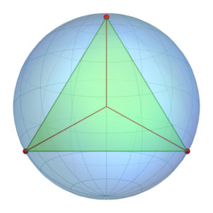
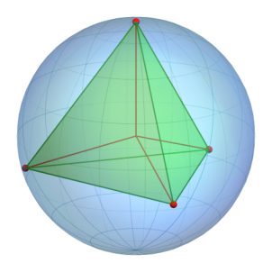
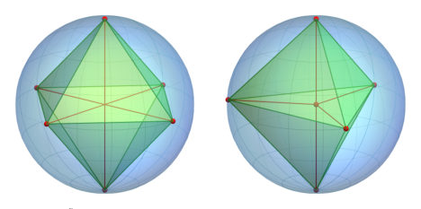
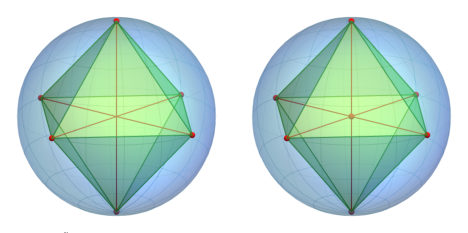
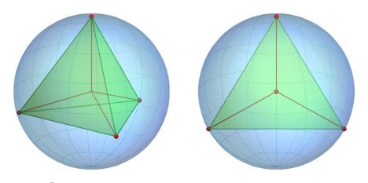
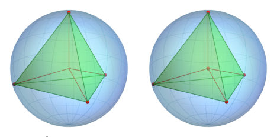
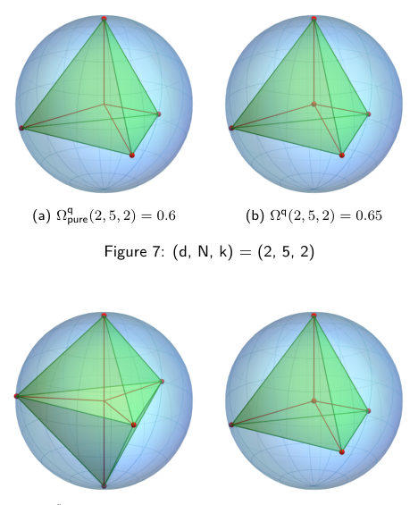
Main problem. Identifying the sets of quantum states that achieve the highest success probability in minimum-error state discrimination when multiple identical copies of an unknown state are provided.
Main result. The authors prove that for large enough N, quantum k-designs are the most discriminable pure state sets, and that mixed states can outperform pure states when N exceeds the size of a k-design. They also demonstrate a quadratic advantage in discriminability for quantum systems over classical ones.
Method. The work utilizes semidefinite programming (SDP), the Holevo-Helstrom theorem, and the theory of quantum k-designs, alongside analytical tools like the symmetric subspace and multiplicative Bayes capacity.
Summary. This paper investigates the fundamental limits of distinguishing quantum states when multiple copies are available. It establishes that quantum k-designs are optimal for pure states and reveals that mixed states can actually be more discriminable than pure states in certain regimes. Furthermore, it proves that quantum systems possess a quadratic advantage over classical probability distributions in terms of discriminability. The study also explores how restricting states to real-valued (rebit) systems reduces this advantage.
Model / system. An ensemble of N d-dimensional quantum states (qudits) provided in k identical and independent copies, with a uniform prior probability for each state.
Key observables. k-copy discriminability (maximal average probability of correctly guessing the state).
Important parameters / regimes. Number of states (N), dimension of the Hilbert space (d), number of copies (k), and the distinction between pure, mixed, classical, and real quantum states.
Assumptions / limitations. The analysis assumes a uniform prior distribution for the states in the ensemble.
Figures summary. Figure 1 illustrates the k-copy discrimination scenario with Alice and Bob; subsequent figures show Bloch sphere representations of optimal state configurations for various parameters.
Paper structure. The paper begins by defining the k-copy discrimination problem, reviews single-copy results, introduces mathematical tools like k-designs and symmetric subspaces, analyzes pure and mixed state regimes, compares quantum to classical/real systems, and concludes with computational techniques and asymptotic scaling.
Why it may be interesting. This paper provides fundamental limits on state discrimination, which is a core task in quantum communication, cryptography, and the characterization of quantum resources.
This work investigates which sets of quantum states give rise to the highest achievable success probability in minimum-error state discrimination if multiple copies of the unknown state are given. Specifically, we consider uniformly distributed ensembles of the form $\left\{\frac{1}{N},ρ_i^{\otimes k}\right\}_{i=1}^N$, where $N$ states in dimension $d$ are provided in $k$ identical copies, and derive universal limits in this scenario. For pure state ensembles, we prove that whenever $N$ is large enough to support a state $k$-design, these designs will exactly give rise to the maximally discriminable sets. We further show that when $N$ exceeds the size required for a $k$-design, mixed states can outperform all pure state ensembles. We also analyse the analogue classical discrimination problems, in which states are replaced by probability distributions. We recognise that the problem of most discriminable classical states in the multi-copy regime is in one-to-one correspondence to the concept of the multiplicative Bayes capacity of independent uses of classical channels, a concept that emerges naturally in the context of classical information leakage. This connection allows us to completely solve the classical analogue of our problem when $N\geq \binom{d + k - 1}{k}$, and to prove that quantum systems offer a quadratic advantage (in number of copies $k$) over classical ones. Curiously, we also show that this quantum advantage is strongly reduced when one is restricted to real quantum states. Finally, we introduce computational techniques to find sets of most discriminable ensembles, and to obtain rigorous universal upper bounds on the maximal success probability for multi-copy state discrimination in cases that are analytically intractable.
Authors: Marek Góźdź, Andrzej Góźdź, Krzysztof Lider
Type: theory · Category: other · PDF: https://arxiv.org/pdf/2604.26716v1
Analysis basis: full PDF text, analyzed in chunks
Topic relevance: quantum measurements 3/5
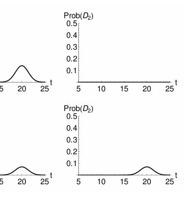
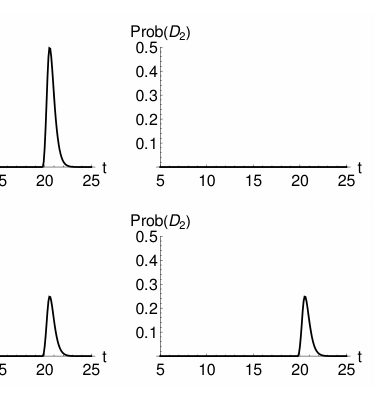
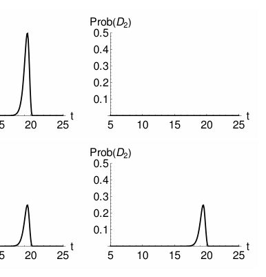
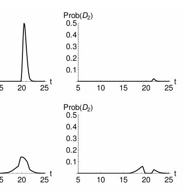
Main problem. Addressing the interpretational problem of time as a classical parameter in non-relativistic quantum mechanics and explaining delayed-choice experiments without invoking retrocausality.
Main result. The authors show that delayed-choice phenomena can be explained by the temporal overlap of a photon's wave function with interferometer components, provided time is treated as a quantum observable.
Method. The study utilizes the Projection Evolution (PEv) model, applying a sequence of projection and translation operators to a 1D-photon wave function with separable temporal and spatial parts.
Summary. This paper proposes the Projection Evolution model to treat time as a quantum observable rather than a classical parameter. By applying this model to a photon in a Mach-Zehnder interferometer, the authors demonstrate that 'delayed-choice' effects arise naturally from the temporal overlap between the photon's wave function and the interferometer's components. This approach allows for the explanation of wave-particle duality changes without needing to invoke retrocausality. The model relies on the temporal 'smearing' of the photon's profile in spacetime.
Model / system. A photon traveling through a Mach-Zehnder interferometer consisting of beamsplitters, mirrors, and detectors, modeled within a 4D spacetime framework where the wave function is defined in both space and time.
Key observables. Detection probabilities at detectors D1 and D2, spacetime position operator, temporal uncertainty, and temporal momentum.
Important parameters / regimes. Temporal and spatial widths of the photon profile (omega_t, omega_x), spacetime shift (alpha), and the presence/timing of beamsplitters.
Assumptions / limitations. The photon is treated as a simplified 1D-photon, motion is approximated semiclassically as a spacetime shift, and the spatial profile is approximated using a sinc-like function.
Figures summary. Figure 1 shows the interferometer setup; Figures 2-4 illustrate detection probabilities for symmetric and asymmetric photon profiles; Figures 5-7 demonstrate detection probabilities for various scenarios involving the presence of beamsplitters at specific time intervals.
Paper structure. The paper begins by identifying the deficiency of time as a parameter, introduces the Projection Evolution model and its mathematical framework, applies the model to a Mach-Zehnder interferometer, analyzes various photon profile scenarios (symmetric vs. asymmetric), and concludes by discussing the resolution of delayed-choice paradoxes.
Why it may be interesting. This paper is interesting for researchers in quantum optics and foundations as it proposes a way to resolve long-standing interpretational paradoxes like delayed-choice using a consistent treatment of time as an observable.
In the Schrödinger evolution of a quantum state time enters as a real parameter representing the coordinate. In a more consistent approach time should be defined as a quantum observable, with the evolution taking place in a four-dimensional spacetime. This is possible in the projection evolution model in which the wave function is defined in both space and time. This allows to construct the time operator and discuss the temporal structure of quantum processes. In this paper we discuss a photon travelling through a Mach-Zehnder interferometer, focusing the description on the temporal profile of the wave function. We show that in this approach the delayed-choice experiments can be explained by the temporal overlap of the photon and the devices in the interferometer.
Authors: Chunxiang Wu, Shuijin Chen, Tingyu Zhou, Le Liu, Xin Peng, Jianjian Jia, Xinyu Yu, Hangdong Wang, Jinhu Yang, Jianhua Du, Minghu Fang
Type: both · Category: strongly correlated electrons · PDF: https://arxiv.org/pdf/2604.26480v1
Analysis basis: full PDF text, analyzed in chunks
Topic relevance: Kondo & dissipative impurity 3/5
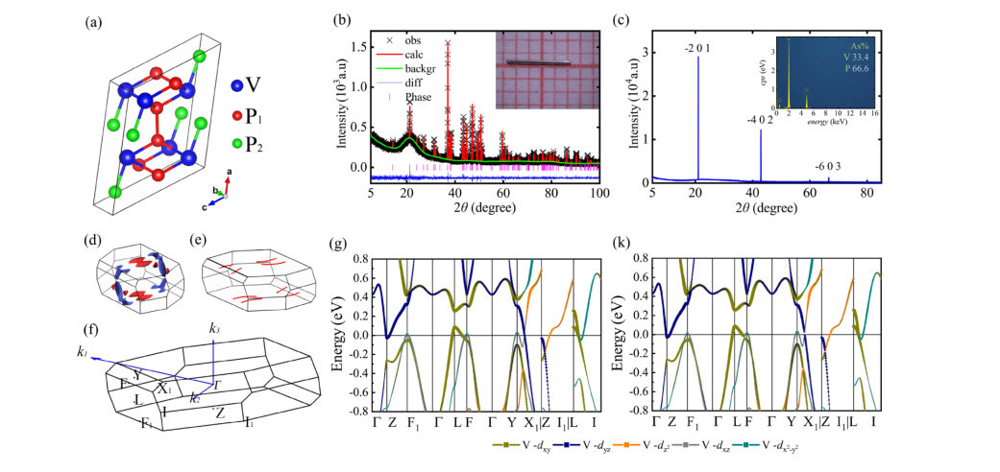
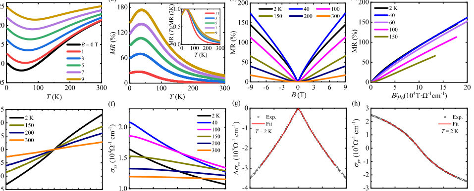
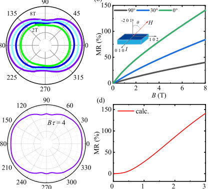
Main problem. The study investigates the electronic transport properties and topological nature of the nodal-line semimetal VP2, specifically focusing on the impact of V4+ magnetic impurities on the Kondo effect and weak anti-localization.
Main result. VP2 is identified as a type-II nodal-line semimetal exhibiting large, non-saturating linear magnetoresistance and a Kondo effect induced by 2.24% magnetic impurities, while maintaining weak anti-localization.
Method. The researchers combined chemical vapor transport crystal growth, magnetotransport measurements (resistivity and Hall effect), and DFT-based numerical simulations using WannierTools.
Summary. This paper explores the transport properties of the nodal-line semimetal VP2. It demonstrates that the material possesses a type-II nodal-line structure and exhibits large, linear magnetoresistance driven by the Lorentz force. Crucially, the study shows that small amounts of magnetic impurities can induce a Kondo effect and coexist with weak anti-localization. This makes VP2 a significant platform for studying the interplay between topology and magnetic scattering.
Model / system. The system consists of VP2 single crystals, a type-II nodal-line semimetal with a monoclinic structure. The transport is modeled using a semiclassical two-carrier model and a simplified Kondo model to account for magnetic impurities.
Key observables. Longitudinal resistivity (rho_xx), Hall resistivity (rho_yx), magnetoresistance (MR), magnetic susceptibility (chi), and angular-dependent resistivity.
Important parameters / regimes. Kondo temperature (TK = 56.1 K), magnetic impurity concentration (2.24% V4+), and carrier concentrations/mobilities for electrons and holes.
Assumptions / limitations. The analysis assumes the conductivity correction from weak anti-localization primarily affects the hole diffusion coefficient; the Hall coefficient independence from mobility is treated within a multi-carrier framework.
Figures summary. Figures include temperature-dependent resistivity and susceptibility, Hall resistivity nonlinearity, carrier concentration and mobility fitting results, and angular-dependent magnetoresistance simulations.
Paper structure. The paper begins with crystal growth and structural characterization, followed by electronic band structure calculations, then details magnetotransport measurements, analysis of the Kondo effect and weak anti-localization, and concludes with a discussion on the implications for topological materials with impurities.
After growing successfully high quality VP$_2$ single crystals, we studied systematically their longitudinal $ρ_{xx}(T)$ and Hall resistivity $ρ_{yx}(T)$ at various magnetic fields, combining the electronic band and Fermi surface (FS) calculations. Band calculations reveal that VP$_2$ is a type-II nodal-line semimetal, evidenced by the Hall resistivity measurements. It is found that the magnetoresistance (MR) at higher magnetic fields exhibits a linear behavior and does not show any sign of saturation, reaching 170\% at 40 K up to 9 T, which is determined by the intrinsic electronic structure and dominated by the Lorenz force, demonstrated by the resistivity anisotropy measurements and the numerical simulations. We also found that the existence of small amount magnetic impurities (V$^{4+}$, $S=1/2$, 2.24\%) results in Kondo effect emerging in $ρ_{xx}(T)$, the conductivity at lower magnetic fields exhibits a typical weak anti-localization (WAL) behavior. These results illustrate that VP$_2$ is a platform to study the electronic transport properties of a topological material containing magnetic impurities.
Authors: Ignacio Baena-Jimenez, Angel Ballesteros, Ivan Gutierrez-Sagredo
Type: theory · Category: other · PDF: https://arxiv.org/pdf/2604.26466v1
Analysis basis: abstract only; PDF text extraction failed or PDF unavailable
Topic relevance: entanglement & information structure 3/5
Main problem. The study investigates information-theoretic entropy and dispersion-like measures for the Fock-Darwin-Darboux (FDD) system, which generalizes the Fock-Darwin system to a curved Darboux III space.
Main result. The authors derive analytical expressions for Shannon, Renyi, and Tsallis entropies for the FD system and provide numerical analysis for the FDD system, demonstrating that the curvature of the manifold breaks the infinite degeneracy of Landau levels.
Method. The study utilizes exact solutions of the quantum Hamiltonian to obtain analytical expressions and employs numerical analysis for the momentum-space wave-functions in the FDD case.
Summary. This paper explores the information-theoretic properties of a quantum system moving on a curved surface under a magnetic field. It extends the well-known Fock-Darwin model to the Darboux III space, which has non-constant negative curvature. The authors calculate various entropies, such as Shannon and Tsallis, showing how the geometry of the space affects quantum uncertainty and the degeneracy of energy levels. The study highlights that the presence of curvature prevents the infinite degeneracy typically seen in the standard Landau levels.
Model / system. The Fock-Darwin-Darboux (FDD) system, which describes a charged particle moving on a Darboux III space (a conformally flat surface with non-constant negative curvature) under the influence of a perpendicular constant magnetic field.
Key observables. Shannon entropy, Renyi entropy, Tsallis entropy, and dispersion-like measures.
Important parameters / regimes. Magnetic field strength, curvature parameter of the Darboux III space, and effective frequency.
Assumptions / limitations. The system is assumed to be exactly solvable, and the underlying manifold is assumed to be a Darboux III space.
Paper structure. The paper introduces the FD and FDD systems, provides analytical derivations for entropy measures in the FD case, presents numerical analysis for the FDD case due to the lack of closed-form momentum-space wave-functions, and concludes with a comparison of entropy behaviors and the effect of curvature on Landau levels.
The Fock-Darwin (FD) quantum system describes the motion on the plane of a charged particle under the action of an isotropic oscillator potential together with a perpendicular constant magnetic field. When the isotropic oscillator is suppressed, the FD system leads to the Landau Hamiltonian with infinitely degenerate Landau levels. The Fock-Darwin-Darboux (FDD) system is the generalisation of the FD system to a particle moving on the Darboux III space, which is a conformally flat surface with non-constant negative curvature. We present a systematic study of some information-theoretic entropy and dispersion-like measures for these quantum systems. Since both systems are exactly solvable, analytical expressions for Shannon, Rényi and Tsallis entropies, among others, can be obtained. We show that for the FD system, its information-theoretic measures are formally the same as the ones for the harmonic oscillator, provided a modified effective frequency depending on the magnetic field is introduced. In the FDD case, the nonlinear nature of the underlying manifold precludes the existence of a simple closed form for the wave-function on momentum space, which is numerically analysed. We compare the numerical behaviour of the different entropy measures and we analyse the interplay arising in the FDD system between the curvature parameter and the magnetic field. In particular, it is shown that the Landau system on the Darboux III space has no infinitely degenerate Landau levels.
Authors: Dmitry S. Ageev, Vladimir A. Bykov
Type: theory · Category: other · PDF: https://arxiv.org/pdf/2604.26016v1
Analysis basis: full PDF text, analyzed in chunks
Topic relevance: analog quantum simulation 2/5 · exotic spin models in light-matter 2/5 · entanglement & information structure 1/5 · non-equilibrium dynamics 1/5 · spintronics-quantum-optics interface 1/5
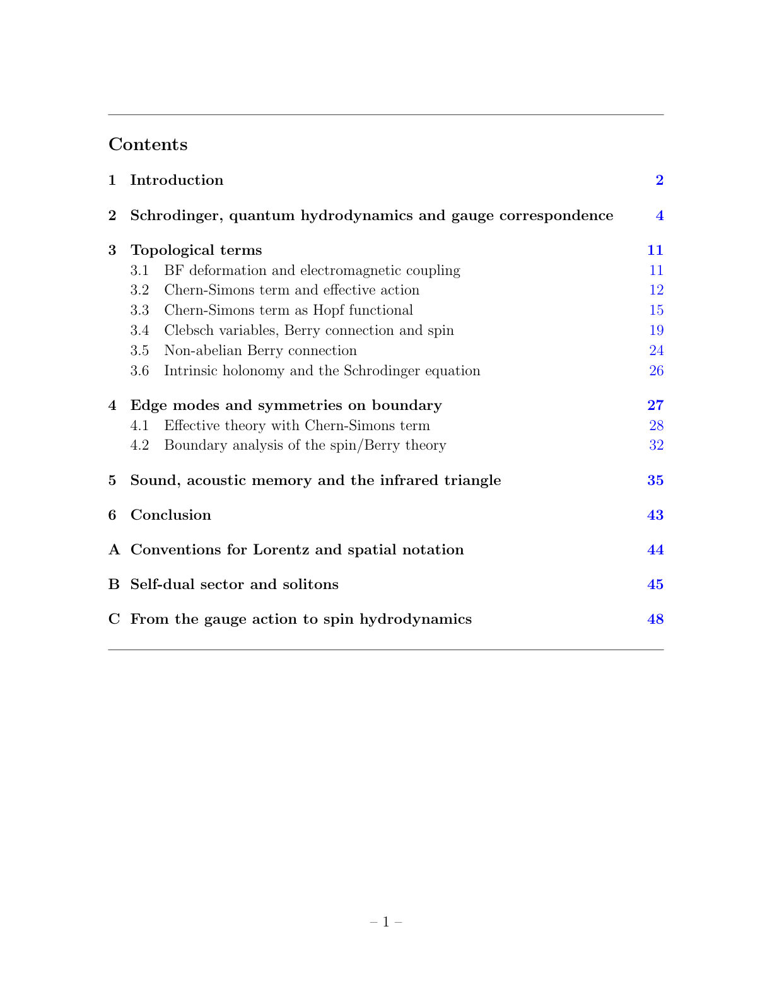
Main problem. The paper seeks to reformulate the non-relativistic Schrodinger equation in gauge-theoretic terms to make its topological and symmetry content explicit.
Main result. The authors establish a three-way local equivalence between the Schrodinger equation, quantum hydrodynamics, and gauge theory, demonstrating that topological terms like Chern-Simons and BF couplings naturally incorporate Berry connections, spin dynamics, and even an 'acoustic infrared triangle' in the nonlinear regime.
Method. The study utilizes the Madelung representation to decompose the wavefunction into density and phase, then employs differential forms, Hodge duals, and variational principles to map these variables to one-form (2+1D) and two-form (3+1D) gauge fields.
Summary. This paper presents a formal duality between the Schrodinger equation, quantum hydrodynamics, and gauge theory. By using the Madelung representation, the authors show that the continuity equation can be viewed as a kinematic identity (Bianchi identity) in a gauge-theoretic framework. They demonstrate how topological terms like Chern-Simons and BF couplings can be used to describe complex phenomena such as Berry connections, spin dynamics, and anyonic sectors. Finally, they show that in the nonlinear regime, the system exhibits an 'acoustic infrared triangle' consisting of memory effects, asymptotic symmetries, and soft modes.
Model / system. The model is a non-relativistic Schrodinger equation (and its spinor/Pauli extensions) in 2+1 and 3+1 dimensions, treated as a compressible quantum fluid.
Key observables. Probability current, density, vorticity, phase winding, Berry connections, spin texture (Bloch vector), and acoustic memory effects.
Important parameters / regimes. Mass (m), Planck's constant (hbar), Chern-Simons coupling (kappa), and the Bogoliubov sound speed (cs).
Assumptions / limitations. The equivalence is local and assumes a non-vanishing wavefunction (rho > 0); the acoustic memory effect specifically requires the nonlinear regime to support a sound branch.
Paper structure. The paper begins by establishing the gauge-hydrodynamic-Schrodinger equivalence via the Madelung transform, then extends this to include topological deformations (BF and Chern-Simons terms) for spin and Berry connections, and concludes by analyzing the infrared structure and memory effects in the nonlinear Bogoliubov regime.
Why it may be interesting. This is highly relevant for many-body dynamics and AMO physics as it provides a unified framework for understanding how topological features like anyons, Berry phases, and edge states emerge from the fundamental structure of the Schrodinger equation, and connects quantum fluid dynamics to the infrared symmetries found in gravity.
In this paper, we reformulate the Schrodinger equation in gauge-theoretic terms. Starting from the Madelung representation, we rewrite the conserved probability-current using gauge fields, namely a one-form gauge field in the $(2+1)$-dimensional theory and a two-form gauge field in the $(3+1)$-dimensional theory. This gives a local equivalence between the Schrodinger equation, quantum hydrodynamics, and a gauge formulation, while the global information is carried by the quantization of phase winding around zeros of the wavefunction. We then explore how this correspondence organizes structures on both sides of the duality. On the gauge side, BF couplings to additional one-forms describe electromagnetic coupling, Berry connections, spinor dynamics, projected non-abelian adiabatic connections, and intrinsic holonomy, while Chern--Simons term generate Hopf functionals, charge-flux attachment, and anyonic sectors. In the presence of boundaries, the topological terms produce edge degrees of freedom and boundary charge algebras. Finally, in the nonlinear regime with a Bogoliubov sound mode, the dual two-form description relates acoustic memory, large gauge transformations and the corresponding soft theorem, organizing them into an infrared triangle.
Authors: Chengjie Luo, Yicheng Qiang, Guido L. A. Kusters, David Zwicker
Type: theory · Category: statistical mechanics · PDF: https://arxiv.org/pdf/2604.26346v1
Analysis basis: abstract only; PDF text extraction failed or PDF unavailable
Topic relevance: driven-dissipative phase transition 2/5 · non-equilibrium dynamics 2/5 · non-equilibrium universality 2/5
Main problem. Understanding how the interplay between physical phase separation and chemical reaction-diffusion processes leads to the emergence of complex patterns in multicomponent mixtures.
Main result. The identification of a Lyapunov functional for a class of chemical reactions and a generalized Gibbs phase rule that governs the coexistence of multiple patterns.
Method. The authors use a Lyapunov functional minimization approach to analyze the stability and coexistence of patterns in active mixtures.
Summary. This paper investigates how chemical reactions and physical phase separation combine to create complex patterns in active mixtures. By finding a Lyapunov functional for certain reaction types, the authors establish a generalized Gibbs phase rule to predict how many different patterns can coexist. They show that complex stationary patterns can be built by combining simpler, independent phases. This provides a theoretical framework for analyzing much more complex active matter systems.
Model / system. Chemically active multicomponent mixtures where components undergo both physical interactions (leading to phase separation) and chemical reactions (leading to reaction-diffusion patterns).
Key observables. Number of coexisting patterns and the stability of stationary patterns.
Important parameters / regimes. The interplay between physical interaction strengths and chemical reaction rates.
Assumptions / limitations. The theory is derived for a specific class of chemical reactions that allow for the identification of a Lyapunov functional.
Paper structure. The paper introduces the problem of pattern formation in active mixtures, presents a Lyapunov functional for specific reactions, derives a generalized Gibbs phase rule, and demonstrates the modular creation of complex patterns.
Chemically active mixtures exhibit complex patterns that emerge from the interplay of physical interactions and reactions among components. Individually, these two processes are well-understood: Physical interactions can give rise to phase separation, whereas reactions can form reaction-diffusion patterns. To understand the combination of both processes, we identify a Lyapunov functional for a class of chemical reactions. By minimizing this functional, we identify a generalized Gibbs phase rule that governs the number of coexisting patterns, and we demonstrate that complex patterns can be created by the modular combination of independent phases. Our theory unveils complex stationary patterns in chemically active mixtures and provides a framework for analyzing more complex systems.
Authors: Blake Andrews, Xiao Liu, Raphael Zumbrunn, Calvin Lee, Sahand Adibnia, Emanuel Druga, Martin Head-Gordon, Ashok Ajoy
Type: both · Category: other · PDF: https://arxiv.org/pdf/2604.26071v1
Analysis basis: abstract only; PDF text extraction failed or PDF unavailable
Topic relevance: quantum measurements 2/5 · quantum optics experiment 2/5 · spintronics-quantum-optics interface 2/5
Main problem. The use of zero-field (ZF) NMR for chemical analysis has been limited by low sensitivity and the difficulty of predicting dense spectral multiplets.
Main result. The authors demonstrate natural-abundance 13C ZF spectroscopy using an 87Rb magnetometer and show that vibrationally corrected DFT can predict these spectra with few-hertz accuracy.
Method. The study combines experimental optical magnetometry using an 87Rb sensor with vibrationally corrected density-functional theory (DFT) calculations.
Summary. This paper presents a method for performing zero-field NMR spectroscopy on natural-abundance 13C without the need for large magnets or hyperpolarization. By using an 87Rb optical magnetometer, the researchers achieved high-sensitivity detection of molecular fingerprints. They also developed a DFT-based computational approach to predict these complex spectra accurately. This combination allows for the study of molecular environments, such as hydrogen bonding and ion pairing, through J-coupling observables.
Model / system. The experimental platform uses a compact commercial 87Rb magnetometer to probe scalar J-couplings in a 13-molecule library of off-the-shelf liquids at zero magnetic field.
Key observables. 13C zero-field NMR spectra, scalar J-couplings, and linewidths.
Important parameters / regimes. Natural abundance of 13C (1.1%), linewidths <250-mHz, and detection of rare doubly 13C-labelled species (0.0121%).
Assumptions / limitations. The method assumes that vibrationally corrected DFT can accurately model the complex multiplets arising from J-couplings in the absence of an external field.
Paper structure. The paper introduces the advantages of ZF NMR, presents experimental results using Rb magnetometry, details the development of DFT-based spectral predictions, and demonstrates the utility of comparing experiment to theory for studying molecular structures.
Why it may be interesting. This work is relevant to AMO physics due to the use of atomic vapor magnetometry (87Rb) for sensing and the study of molecular dynamics and J-coupling interactions in a field-free environment.
Zero-field (ZF) nuclear magnetic resonance (NMR) spectroscopy probes scalar J-couplings between nuclei while dispensing with large homogeneous magnetic fields, enabling low-cost and geometrically flexible detection, including through conductive enclosures. Despite these advantages, its broader use for chemical analysis has been limited by sensitivity and by the difficulty of predicting the dense spectral multiplets that arise at zero field. Here we demonstrate natural-abundance (1.1%) 13C ZF spectroscopy on off-the-shelf liquids using a compact commercial 87Rb magnetometer for the first time, without hyperpolarization or special sample preparation. Instrumental advances yield improved sensitivity, <250-mHz linewidths and >week-long stability, enabling isotopomer-resolved fingerprint spectra across a 13-molecule library, including the ability to discern rare (0.0121%) doubly 13C-labelled species. In parallel, we demonstrate vibrationally corrected density-functional theory (DFT) based prediction of ZF NMR spectra for chemically diverse molecules with few-hertz accuracy. Comparing experiment with these calculations renders residual deviations as chemically informative, reporting on hydrogen bonding, hydration and ion pairing at high ionic strength. Together, these results contribute towards DFT-assisted ZF NMR as a general platform for field-constraint-free molecular identification and for extracting transient solution-state structure from responsive J-coupling observables.
Authors: Pasquale Casaburi, Pierpaolo Vivo
Type: theory · Category: disordered systems and neural networks · PDF: https://arxiv.org/pdf/2604.26852v1
Analysis basis: full PDF text, analyzed in chunks
Topic relevance: Dicke superradiance 2/5 · exotic spin models in light-matter 2/5 · free-space correlated emission 2/5
Main problem. Characterizing the extremal spectral properties, specifically the largest eigenvalue and the top eigenvector components, of large Euclidean random matrices.
Main result. The authors derive a unified replica-based framework that provides an explicit expression for the average largest eigenvalue and an analytical characterization of the top eigenvector's component distribution, showing they depend only on the first four moments of the underlying distribution.
Method. The study employs the replica method and a saddle-point evaluation in the large-N limit, supplemented by extensive numerical simulations using direct diagonalization.
Summary. This paper provides a general analytical framework to determine the largest eigenvalue and the structure of the top eigenvector for large Euclidean random matrices. By using the replica method, the authors show that these extremal properties are determined by the low-order moments of the underlying spatial distribution. The findings reveal that the top eigenvector components concentrate on a specific hypersurface. The theoretical predictions are rigorously validated against numerical simulations across a wide range of dimensions and probability distributions.
Model / system. Euclidean random matrices where entries are defined by a quadratic kernel of squared Euclidean distances between N random vectors in d-dimensional space.
Key observables. Largest eigenvalue (lambda_max) and the probability density of the top eigenvector's components T(u).
Important parameters / regimes. Matrix size N, dimension d, variance sigma^2, and higher-order moments of the underlying spatial distribution.
Assumptions / limitations. The analysis focuses on the large-N (thermodynamic) limit and assumes a quadratic kernel; the replica-symmetric ansatz is used for the derivation.
Figures summary. Figures compare theoretical predictions for the largest eigenvalue and eigenvector density against numerical results across various dimensions, distributions (isotropic, i.i.d., and Gaussian), and scaling parameters.
Paper structure. The paper introduces the problem of Euclidean random matrices, develops a replica-based framework using an auxiliary partition function, derives self-consistent equations for the eigenvalue and eigenvector, validates the results with various distribution classes (isotropic, i.i.d., and multivariate Gaussian), and concludes with discussions on universality and future extensions.
Why it may be interesting. The results are highly relevant for understanding the vibrational spectra of glasses, Anderson localization, and cooperative light-matter interactions like superradiance in disordered atomic ensembles.
Euclidean random matrices arise in a wide range of physical systems where interactions are determined by spatial configurations, including disordered media and cooperative phenomena in atomic ensembles. Unlike classical random matrix ensembles, their entries are strongly correlated through the geometry of the underlying random points, making their analytical treatment challenging. While global spectral properties such as the spectral density are relatively well understood, much less is known about extremal eigenvalues and the associated eigenvectors, despite their central role in applications. Here we address the problem of characterising the largest eigenvalue and the corresponding top eigenvector of large Euclidean random matrices with a quadratic kernel. For vectors in any dimension $d \geq 1$ drawn independently from a common distribution, we show that both quantities can be computed within a unified replica-based framework, leading to a set of self-consistent equations involving a small number of parameters. This approach yields an explicit expression for the average largest eigenvalue, fully determined by low-order moments of the underlying distribution, and an analytical characterisation of the distribution of top eigenvector's components in the large-$N$ limit. We find that the top eigenvector exhibits a non-trivial geometric structure, with components concentrating on a hypersurface determined by the same parameters controlling the largest eigenvalue. We further perform extensive numerical simulations that confirm these predictions. More broadly, our work provides a general framework to access extremal spectral properties of Euclidean random matrices.
Authors: Ning Liu
Type: theory · Category: other · PDF: https://arxiv.org/pdf/2604.26642v1
Analysis basis: full PDF text, analyzed in chunks
Topic relevance: Keldysh / 2PI / non-Gaussian methods 2/5 · methods for driven-dissipative 2/5 · correlated / nonlocal dissipation 1/5 · non-equilibrium dynamics 1/5
Main problem. The lack of a unified, differential variational principle in quantum mechanics capable of handling nonholonomic constraints, geometric potentials, and velocity-dependent dissipative forces as easily as classical mechanics.
Main result. The derivation of a 'Quantum Principle of Least Constraint' that is mathematically equivalent to the Schrödinger equation and provides a unified framework for conservative, geometric, and dissipative quantum dynamics.
Method. A variational approach using a quantum constraint functional that minimizes the probability-weighted square deviation between actual and unconstrained acceleration, combined with the Madelung hydrodynamic representation.
Summary. This paper introduces a new variational principle for non-relativistic quantum mechanics based on Gauss's principle of least constraint. By minimizing the deviation between actual and unconstrained acceleration, the author recovers the Schrödinger equation and its hydrodynamic equivalent. The framework is uniquely powerful because it can incorporate geometric constraints and friction into a single variational structure. This allows for a unified treatment of complex phenomena like the geometric potential on curved surfaces and the Kostin equation for damped oscillators.
Model / system. A non-relativistic quantum particle in an external potential, including specific applications to particles on curved surfaces (geometric potentials) and a 1D damped harmonic oscillator (dissipative dynamics).
Key observables. Probability density, velocity field, quantum potential, and the expectation value of momentum.
Important parameters / regimes. The quantum potential (Q), the damping coefficient (gamma), and the classical limit (hbar approaching 0).
Assumptions / limitations. The velocity field is assumed to be irrotational, and the derivation relies on the validity of the Madelung hydrodynamic decomposition.
Figures summary. Figure 1 provides a schematic comparison between classical Gauss principle and the proposed quantum version; Figure 2 shows the logical derivation flow from the constraint functional to the Schrödinger equation.
Paper structure. The paper begins with the motivation of a new variational principle, moves to the mathematical derivation of the quantum Euler equations via the least constraint principle, demonstrates equivalence to the Schrödinger equation, and then applies the framework to geometric constraints and dissipative systems.
Why it may be interesting. It provides a new fundamental perspective on the origin of the quantum potential and offers a technically economical way to derive nonlinear Schrödinger equations for open/dissipative systems and constrained geometries.
We formulate a variational principle for non-relativistic quantum mechanics inspired by Gauss's principle of least constraint. We define a quantum constraint functional as the probability-weighted square deviation between the actual motion and the unconstrained motion that would arise from external forces alone. In this functional, the quantum potential plays the role of an intrinsic constraint that modifies the acceleration. Minimizing this quantum constraint functional with respect to the acceleration field yields the quantum Euler equations, which together with the continuity equation are equivalent to the Schrödinger equation. The principle is instantaneous and provides a differential characterization of quantum evolution. We demonstrate that this formulation is not a mere rewriting of existing dynamics: it provides a unified and technically economical treatment of geometric constraints and velocity-dependent dissipative forces, neither of which admits a straightforward global variational formulation. Potential applications to a broad range of quantum phenomena are also indicated.
Authors: Pegah Mohammadipour, Xiantao Li
Type: theory · Category: quantum information and computing · PDF: https://arxiv.org/pdf/2604.26865v1
Analysis basis: full PDF text, analyzed in chunks
Topic relevance: non-equilibrium dynamics 2/5 · quantum measurements 2/5


Main problem. The qDRIFT randomized Hamiltonian simulation protocol suffers from high gate complexity, scaling as O(epsilon^-3), when high-precision observable estimation is required due to the need to suppress both algorithmic bias and statistical variance.
Main result. The authors introduce MLMC-qDRIFT, which reduces the total gate complexity to O(epsilon^-2 log^2(1/epsilon)) while maintaining independence from the number of Hamiltonian terms, demonstrated by a 28x speedup at epsilon = 10^-4.
Method. A Multilevel Monte Carlo (MLMC) framework using a hierarchy of qDRIFT estimators coupled via an 'index-sharing' technique and an 'augmented-state' construction to control measurement shot-noise.
Summary. This paper addresses the high computational cost of high-precision quantum Hamiltonian simulation using the randomized qDRIFT algorithm. By applying a Multilevel Monte Carlo (MLMC) approach, the authors create a hierarchy of simulations that share random samples to reduce variance. They also introduce an augmented-state measurement strategy to prevent measurement noise from destroying the efficiency gains. The result is a significant reduction in gate complexity, making high-precision simulations of large systems much more feasible on near-term quantum hardware.
Model / system. The method is validated using a 6-qubit Heisenberg XYZ spin chain with Hamiltonian terms defined by Jx, Jy, and Jz coupling constants.
Key observables. Expectation values of the Pauli-Z operator (Z0) on the first qubit.
Important parameters / regimes. Target precision (epsilon), Hamiltonian one-norm (lambda), evolution time (t), and the crossover precision (epsilon*) where the multilevel overhead becomes efficient.
Assumptions / limitations. The Hamiltonian terms are Hermitian with unit norm, the observable is bounded, and the index-sharing coupling is used to ensure geometric variance decay.
Figures summary. Figure 1 illustrates the index-sharing coupling between levels; Figure 2 shows the decay of MLMC variance and absolute mean; Figure 3 validates the decay of shot-noise variance in the augmented estimator; Figure 4 compares total gate complexity of standard qDRIFT vs MLMC-qDRIFT.
Paper structure. The paper introduces the qDRIFT bottleneck, proposes the MLMC-qDRIFT hierarchy and index-sharing coupling, develops the augmented-state construction to handle measurement noise, provides complexity proofs, and concludes with numerical validation on a spin chain.
Why it may be interesting. This is highly relevant for many-body dynamics as it provides a more efficient way to simulate time-evolution of large-scale quantum systems by turning the statistical error of randomized sampling into a precision-efficient computational tool.
Simulating quantum dynamics is one of the central applications of quantum computing. For Hamiltonians written as a sum of many terms, deterministic Trotter--Suzuki product formulas can require applying a large number of term-wise evolutions at each time step, leading to high circuit costs for large or dense systems. Randomized methods such as qDRIFT offer an alternative: each step samples only one Hamiltonian term, giving a circuit depth with no explicit dependence on the number of terms. However, when qDRIFT is used for observable estimation, high precision requires many independent random circuit realizations, resulting in a total gate complexity that scales as $\mathcal{O}(\varepsilon^{-3})$. We introduce a multilevel Monte Carlo framework for qDRIFT that reduces this sampling overhead. The method constructs a hierarchy of qDRIFT estimators with increasing circuit depths and couples adjacent levels by sharing their random Hamiltonian-term samples. This coupling makes the variance of the level differences decay with depth, allowing most samples to be taken on cheaper, coarse circuits and only a few on expensive, fine circuits. We prove that the resulting MLMC-qDRIFT estimator reduces the total gate complexity for fixed-precision observable estimation from the standard qDRIFT scaling $\mathcal{O}(\varepsilon^{-3})$ to $\mathcal{O}(\varepsilon^{-2}\log^2(1/\varepsilon))$, while preserving qDRIFT's lack of explicit dependence on the number of Hamiltonian terms. Numerical experiments for spin-chain dynamics confirm the predicted variance decay and demonstrate the practical gate-count savings of the multilevel construction.
Authors: Sherzod R. Otajonov, Uktambek R. Eshimbetov, Bakhram A. Umarov, Fatkhulla Kh. Abdullaev
Type: theory · Category: quantum gases · PDF: https://arxiv.org/pdf/2604.26895v1
Analysis basis: full PDF text, analyzed in chunks
Topic relevance: Keldysh / 2PI / non-Gaussian methods 2/5 · non-equilibrium dynamics 2/5

Main problem. The study investigates the quantum scattering dynamics of 1D Bose-Bose mixture quantum droplets when interacting with external Pöschl-Teller potential wells and barriers.
Main result. The authors identify a sharp transition between reflection and transmission at a critical velocity, which depends non-monotonically on atom number, and discover that large droplets form asymmetric trapped modes while small droplets form symmetric ones.
Method. A two-stage variational approach using a super-Gaussian ansatz and a position-dependent ansatz is combined with direct numerical simulations of the extended Gross-Pitaevskii equation.
Summary. This paper explores how 1D quantum droplets scatter off potential wells and barriers. It reveals that the scattering behavior—whether the droplet is reflected, transmitted, or trapped—depends heavily on the droplet's size and its transition from a compressible to an incompressible state. The study also shows that attractive wells can imprint a pi-phase shift on the droplets, significantly altering the outcome of subsequent droplet-droplet collisions. These findings provide deep insight into the complex dynamics of self-bound quantum liquids.
Model / system. A quasi-one-dimensional two-component Bose-Einstein condensate with repulsive intra-species and attractive inter-species interactions, stabilized by Lee-Huang-Yang quantum fluctuations, governed by an extended 1D Gross-Pitaevskii equation.
Key observables. Reflection, transmission, and trapping coefficients; center-of-mass position; density profiles; phase shifts; and energy components (kinetic, potential, interaction, and gradient energy).
Important parameters / regimes. Atom number (N), potential depth (U0), incident velocity (v), potential width (alpha), and the crossover between compressible (soliton-like) and incompressible (flat-top) regimes.
Assumptions / limitations. The model assumes a symmetric two-component BEC that can be reduced to a single-field effective model and focuses on the 1D regime with specific transverse confinement.
Figures summary. Figures show scattering coefficients vs. velocity, time-evolution of density profiles for different droplet sizes and velocities, phase evolution showing pi-phase jumps, and energy redistribution during well entry.
Paper structure. The paper introduces the physical system and model, describes the variational and numerical methods, analyzes scattering by attractive wells (including trapped modes and critical velocity), examines scattering by repulsive barriers, investigates droplet-droplet collisions influenced by phase imprinting, and concludes with experimental context.
Why it may be interesting. This work is highly relevant for many-body dynamics and AMO physics as it explores how the internal structure and compressibility of self-bound quantum droplets fundamentally alter scattering and collision outcomes, including the emergence of non-classical quantum reflection.
We investigate, both analytically and numerically, the scattering of quasi-one-dimensional quantum droplets from Pöschl-Teller potential wells and barriers. For attractive wells, we find a sharp transition between complete reflection and transmission at a critical incident velocity for both small and large flat-top droplets. The scattering interactions differ: small, soliton-like droplets form a spatially symmetric trapped mode at the critical velocity, showing their compressibility and coherence characteristics, while large droplets develop a spatially asymmetric trapped state, revealing incompressibility and internal structure. The critical velocity depends non-monotonically on atom number: it rises in the small, compressible-droplet regime, falls in the incompressible, flat-top regime, and turns at the crossover point. We also show that the reflectionless well generates a $π$-phase shift, strongly altering droplet-droplet collisions relative to free space. The persistence of a confined mode after collisions between trapped and incident droplets depends sensitively on their relative phase. For the repulsive barrier, we identify regimes of complete reflection, partial return, and full transmission, depending on incident velocity, barrier height, and particle number. Our predictions match direct numerical simulations in all cases.
Authors: Arkopal Dutt, Anirban Chowdhury, Kristan Temme, Hari Krovi
Type: theory · Category: quantum information and computing · PDF: https://arxiv.org/pdf/2604.26945v1
Analysis basis: full PDF text, analyzed in chunks
Topic relevance: methods for driven-dissipative 2/5 · non-equilibrium dynamics 2/5
Main problem. Developing a quantum algorithm to simulate the dynamics of RLC circuits, specifically addressing the challenge of solving Differential-Algebraic Equations (DAEs) where the mass matrix can be singular.
Main result. The authors present a quantum DAE solver that achieves an exponential speedup, running in polylog(N) time, and prove that estimating energy/power in these circuits is BQP-hard.
Method. The algorithm uses Modified Nodal Analysis (MNA) to formulate the circuit as a linear DAE, employs block-encoding and Quantum Singular Value Transformation (QSVT), and utilizes a quantum ODE solver to decouple differential and algebraic components.
Summary. This paper introduces a quantum algorithm for simulating the time-evolution of RLC circuits with an exponential speedup over classical methods. By developing a specialized quantum solver for Differential-Algebraic Equations (DAEs), the authors overcome the limitations of standard ODE solvers when dealing with singular matrices caused by voltage sources. They prove that estimating energy in these circuits is BQP-hard, providing strong evidence for quantum advantage. The method is applicable to any linear dynamical system governed by DAEs.
Model / system. The system consists of linear RLC (Resistor-Inductor-Capacitor) circuits with DC power sources, modeled by the DAE system M x_dot + Kx = f.
Key observables. Stored electrical energy in capacitors or inductors, and power dissipated in resistors.
Important parameters / regimes. Circuit connectivity (d-sparsity), resistance (R), inductance (L), capacitance (C), and the time interval [0, T].
Assumptions / limitations. Assumes oracle access to circuit connectivity and component values; assumes the circuit connectivity is d-sparse; assumes the forcing term f is time-independent.
Paper structure. The paper introduces the problem of RLC simulation, defines the DAE mathematical framework using MNA, develops the quantum DAE solver via block-encoding and ODE reduction, proves BQP-hardness via a reduction from coupled oscillators, and discusses error management and complexity.
Why it may be interesting. This work is highly relevant for researchers in many-body dynamics and open quantum systems as it provides a new framework for simulating complex dynamical systems with algebraic constraints, potentially extending to robotics or fluid dynamics.
We introduce a quantum algorithm for simulating the dynamics of electrical circuits consisting of resistors, inductors and capacitors (aka RLC circuits) along with power sources. Given oracle access to the connectivity of the circuit and values of the electrical elements, our algorithm prepares a quantum state that encodes voltages and current values either at a specified time or the history of their evolution over a time-interval. For an RLC circuit with $N$ components, our algorithm runs in time $\textsf{polylog}(N)$ under mild assumptions on the connectivity of the circuit and values of its components. This provides an exponential speed-up over classical algorithms that take $\textsf{poly}(N)$ time in the worst-case. Our algorithm can be used to estimate energy across a set of components or dissipated power in $\textsf{polylog}(N)$ time, a problem that we prove is BQP-hard and therefore unlikely to be efficiently solved by classical algorithms. The main challenge in simulating the dynamics of RLC circuits is that they are governed by differential-algebraic equations (DAEs), a coupled system of differential equations with hidden algebraic constraints. Consequentially, existing quantum algorithms for ordinary differential equations cannot be directly utilized. We therefore develop a quantum DAE solver for simulating the time-evolution of linear DAEs. For RLC circuits, we employ modified nodal analysis to create a system of DAEs compatible with our quantum algorithm. We establish BQP-hardness by demonstrating that any network of classical harmonic oscillators, for which an energy-estimation problem is known to be BQP-hard, is a special case of an LC circuit. Our work gives theoretical evidence of quantum advantage in simulating RLC circuits and we expect that our quantum DAE solver will find broader use in the simulation of dynamical systems.
Authors: Kean Chen, Qisheng Wang, Zhicheng Zhang
Type: theory · Category: quantum information and computing · PDF: https://arxiv.org/pdf/2604.26900v1
Analysis basis: full PDF text, analyzed in chunks
Topic relevance: entanglement & information structure 2/5 · quantum measurements 2/5
Main problem. The paper addresses the query complexity of certifying whether an unknown d-dimensional quantum channel is exactly equal to a target unitary or is epsilon-far from it in the diamond norm.
Main result. The authors establish a strict hierarchy of optimal query complexities across three access models: Theta(d/epsilon^2) for incoherent access, Theta(d/epsilon) for coherent access, and Theta(sqrt(d)/epsilon) for source-code access.
Method. The study uses the Choi-Jamiołkowski isomorphism for the incoherent model, a bootstrapping/amplification strategy for the coherent model, and Quantum Amplitude Estimation for the source-code model.
Summary. This paper solves the problem of determining the minimum number of queries needed to certify a quantum channel as a specific unitary. It proves that the difficulty of this task depends strictly on the type of access available to the researcher. By analyzing incoherent, coherent, and source-code access models, the authors show a clear hierarchy of complexity, matching all known lower bounds. This provides a complete characterization of the query complexity for quantum channel certification to unitaries.
Model / system. The problem is formulated in terms of d-dimensional quantum channels and their deviation from a target unitary channel, evaluated using the diamond norm.
Key observables. Entanglement fidelity and the diamond norm distance between channels.
Important parameters / regimes. Channel dimension (d), error tolerance (epsilon), and failure probability (delta).
Assumptions / limitations. The channels are d-dimensional and the task is to distinguish between the exact unitary and an epsilon-far alternative.
Figures summary. Table 1 summarizes the query complexity, the specific theorems providing new upper bounds, and the corresponding existing lower bounds for all three access models.
Paper structure. The paper introduces the certification problem, then presents three distinct algorithms (incoherent, coherent, and source-code) corresponding to three levels of access power, proving matching upper and lower bounds for each to establish the complexity hierarchy.
Why it may be interesting. This is highly relevant for researchers in open quantum systems and quantum information, as it provides fundamental limits on how efficiently one can verify the integrity of quantum gates and channels under different experimental control regimes.
We consider the problem of quantum channel certification to unitary, where one is given access to an unknown $d$-dimensional channel $\mathcal{E}$, and wants to test whether $\mathcal{E}$ is equal to a target unitary channel or is $\varepsilon$-far from it in the diamond norm. We present optimal quantum algorithms for this problem, settling the query complexities in three access models with increasing power. Specifically, we show that: (i) $Θ(d/\varepsilon^2)$ queries suffice for incoherent access model, matching the lower bound due to Fawzi, Flammarion, Garivier, and Oufkir (COLT 2023). (ii) $Θ(d/\varepsilon)$ queries suffice for coherent access model, matching the lower bound due to Regev and Schiff (ICALP 2008). (iii) $Θ(\sqrt{d}/\varepsilon)$ queries suffice for source-code access model, matching the lower bound due to Jeon and Oh (npj Quantum Inf. 2026). This demonstrates a strict hierarchy of complexities for quantum channel certification to unitary across various access models.
Authors: Guo Xuan Chan, Wangwei Lan, Tenghui Wang, Xizheng Ma, Chunqing Deng, Lijing Jin
Type: theory · Category: quantum information and computing · PDF: https://arxiv.org/pdf/2604.26373v1
Analysis basis: abstract only; PDF text extraction failed or PDF unavailable
Topic relevance: Tavis-Cummings & cavity-many-emitter 2/5 · quantum measurements 2/5
Main problem. Scaling fluxonium-based quantum processors is limited by a trade-off between coupling strength, crosstalk suppression, and the physical spacing required for wiring in 2D architectures.
Main result. The authors develop a quantitative design framework and a frequency-partitioned architecture using double-transmon couplers (DTC) that enables high-fidelity gates, fast reset, and robust readout while maintaining isolation.
Method. The study employs a multi-objective optimization approach under realistic experimental constraints and fabrication-induced disorder, utilizing a sequential design workflow.
Summary. This paper presents a system-level design strategy for scaling fluxonium quantum processors. By using double-transmon couplers, the authors propose a way to achieve strong qubit interactions without increasing crosstalk or requiring excessive physical spacing. They introduce a frequency-partitioned architecture that separates qubit, coupler, and resonator modes to optimize gate performance and readout. The resulting framework provides a practical roadmap for building larger, high-fidelity superconducting quantum arrays.
Model / system. A scalable superconducting quantum processor architecture based on fluxonium qubits coupled via multi-mode double-transmon couplers (DTC) and integrated with resonators.
Key observables. Single- and two-qubit gate fidelities, qubit reset speed, and dispersive readout robustness.
Important parameters / regimes. Frequency-partitioned spectral regions for qubit transitions, coupler excitations, and resonator modes; coupling strengths; and fabrication-induced disorder.
Assumptions / limitations. The design assumes realistic experimental constraints and accounts for fabrication-induced disorder in the optimization process.
Paper structure. The paper introduces the scaling challenge, proposes a DTC-based architecture, details a frequency-partitioned design framework, applies multi-objective optimization, and validates the resulting parameter regime for processor-level performance.
Why it may be interesting. This work is highly relevant for researchers in quantum optics and open quantum systems as it addresses the engineering of complex, multi-mode light-matter interfaces and the management of spectral crowding in large-scale circuit QED architectures.
Fluxonium qubits combine long coherence times with strong anharmonicity, making them a promising platform for scalable superconducting quantum processors. Recent experiments have demonstrated high-fidelity operations in multi-qubit processors while suppressing stray qubit interactions using fluxonium-transmon-fluxonium (FTF) architectures. However, scaling such systems to larger arrays is constrained by a trade-off between achievable coupling strength, crosstalk suppression and qubit-qubit spacing required for wiring in a two-dimensional architecture. Multimode couplers, such as the double-transmon coupler (DTC), provide a promising pathway to overcome this limitation by enabling stronger interactions without compromising qubit spacing and isolation. Here, we develop a quantitative design framework for fluxonium-based quantum processors employing DTCs. Central to this work is a frequency-partitioned architecture that places qubit transitions, tunable-coupler excitations, and resonator modes in well-separated spectral regions. This structured allocation reduces parameter interdependence and enables the concurrent optimization of gate operations, readout, and qubit reset. By formulating device design as a multi-objective optimization problem under realistic experimental constraints and fabrication-induced disorder, we develop a tractable sequential workflow and determine a feasible parameter regime that simultaneously supports high-fidelity single- and two-qubit gates, fast qubit reset, and robust dispersive readout. These results establish a system-level architectural methodology that links circuit parameters to processor-level performance, and provide an experimentally actionable pathway toward scalable fluxonium quantum processors.
← Index · ← Previous · Next →